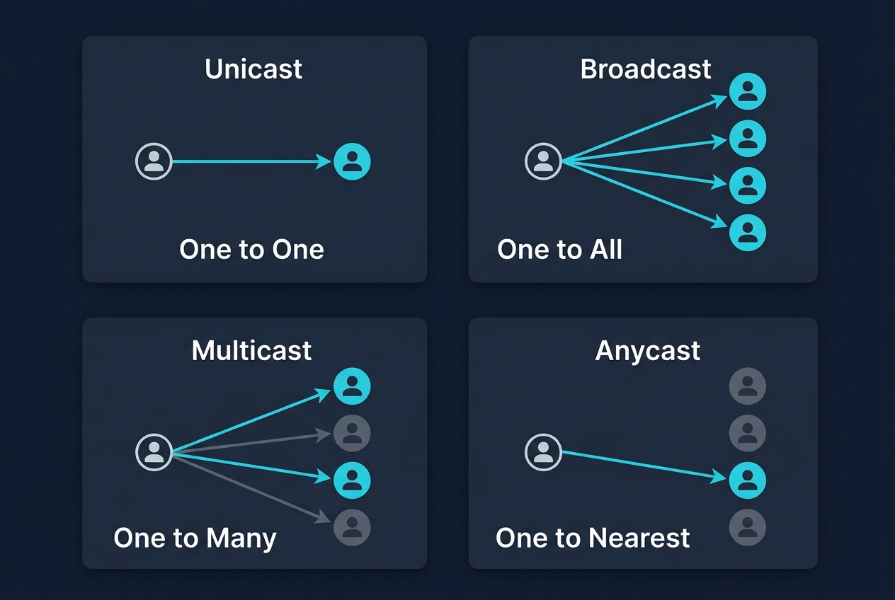
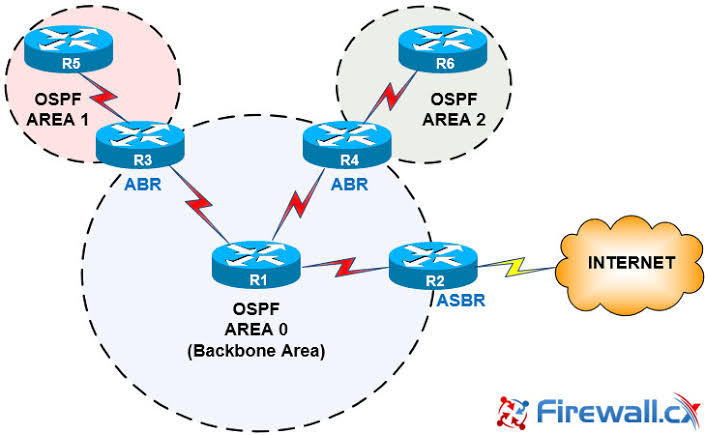
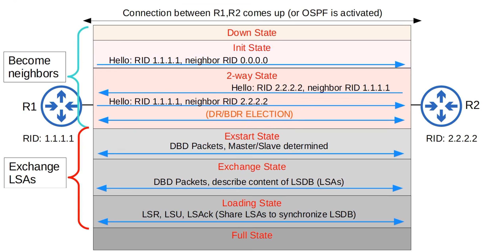
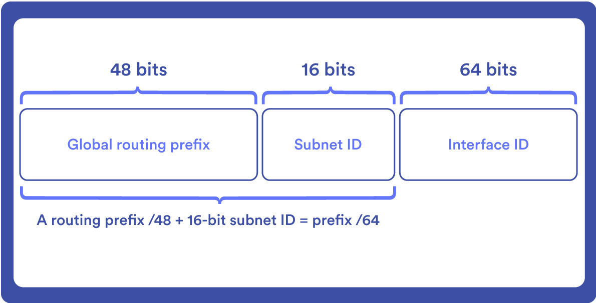
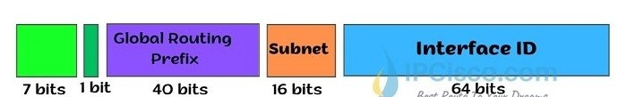
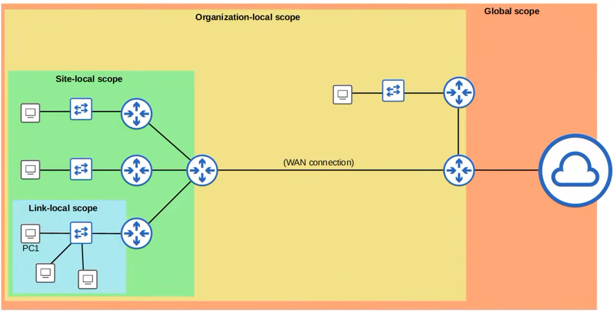
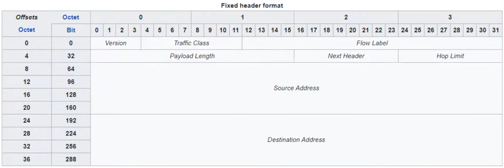

Overview
A network is a collection of devices connected together so they can communicate and share resources. It can be as small as two computers connected at home, or as large as millions of servers spread across the globe forming the Internet.

Network Types
- LAN (Local Area Network): a network within a small area — a single building, office, or home. Provides high-speed connectivity over short distances. Most LANs use Ethernet (wired) or Wi-Fi (wireless).
- MAN (Metropolitan Area Network): spans a city or large campus. Connects multiple LANs within a geographic region, often managed by a single organization or service provider.
- WAN (Wide Area Network): spans large geographic areas — cities, countries, or the entire globe. The internet is the largest WAN. Connects remote LANs together over long distances.
Communication Types
Network communication is classified by how many destinations a single transmission is intended for:

- Unicast (One to One): a message sent from one source to one specific destination.
- Broadcast (One to All): a message sent from one source to every device on the local network.
- Multicast (One to Many): a message sent from one source to a specific group of devices — not all, only those that have subscribed to receive it.
- Anycast (One to Nearest): a message sent from one source to the nearest device out of several that share the same address.
Network Devices
Every device in a network is called a node. Nodes include routers, switches, firewalls, servers, and clients. Servers and clients are specifically called end hosts or endpoints.
- Client: a device that accesses a service made available by a server. Examples: a laptop browsing a website, a phone checking email.
- Server: a device that provides functions or services for clients. Examples: a web server, an email server, a file server.
- Switch: has many network interfaces/ports (usually 24+) for end hosts to connect to. Provides connectivity to hosts within the same LAN (Local Area Network). Does not provide connectivity between different LANs or over the internet.
- Router: has fewer network interfaces than a switch. Used to provide connectivity between LANs and to send data over the internet.
- Firewall: monitors and control network traffic based on configured security rules. Can be placed inside or outside the network perimeter. Known as a Next-Generation Firewall (NGFW) when it includes more modern and advanced filtering capabilities.
| Firewall Types | Description |
|---|---|
| Network Firewall | A hardware device that filters traffic between networks. Sits at the boundary between a private network and the internet (or between internal network segments). |
| Host-Based Firewall | A software application that filters traffic entering and exiting a single host machine, such as a PC. Even with a network firewall in place, each host should have its own firewall as an extra line of defense. |
Bits & Bytes
- 8 bits = 1 byte. Data sizes (file sizes) are typically measured in bytes while network speeds are measured in bits per second — not bytes per second.
| Speed Units | Symbol | Value |
|---|---|---|
| Kilobit | Kb | 1,000 bits (10³) |
| Megabit | Mb | 1,000,000 bits (10⁶) |
| Gigabit | Gb | 1,000,000,000 bits (10⁹) |
| Terabit | Tb | 1,000,000,000,000 bits (10¹²) |
| Petabit | Pb | 10¹⁵ bits |
| Exabit | Eb | 10¹⁸ bits |
| Zettabit | Zb | 10²¹ bits |
| Yottabit | Yb | 10²⁴ bits |
Console and CLI
Network devices such as routers and switches have a console port that provides direct out-of-band access to the device, allowing it to be configured even when no network connection is available. Console access is commonly used for initial configuration, recovery, and troubleshooting.
A traditional Cisco console connection uses a rollover cable, where the pins are reversed from one end to the other. The RJ-45 end connects to the network device, while the other end connects to the computer through a DB9 (serial) connector. Some modern devices also provide a direct USB console port.
A terminal emulator such as PuTTY is then used to open the console session. A typical Cisco console connection uses 9600 speed (baud) rate, 8 data bits, 1 stop bit, no parity, and no flow control. The stop bit is sent after the 8 data bits to mark the end of each byte.
Once the connection is established, the Cisco IOS (Internetwork Operating System) command-line interface becomes available. Cisco IOS organizes commands into different modes, with each mode providing a different level of access:
- User EXEC Mode (
Router>): the initial mode after accessing the device. It provides limited monitoring commands but does not allow configuration changes. - Privileged EXEC Mode (
Router#): entered usingenable. It provides access to advanced monitoring, management, saving, and configuration functions. - Global Configuration Mode (
Router(config)#): entered usingconfigure terminalfrom Privileged EXEC mode and is used to make configuration changes to the device.
Because Privileged EXEC mode provides extensive control over the device, access to it can be protected with a password:
enable password password
enable secret passwordThe enable password command is the older and less secure method, while enable secret stores the password using a one-way hash and is the preferred method. If both are configured, enable secret takes precedence.
Supported plaintext passwords in the configuration can also be protected from being displayed directly using:
service password-encryptionThis command converts supported plaintext passwords to Cisco Type 7 obfuscation. Type 7 is reversible and provides only limited protection, while enable secret uses stronger one-way protection.
Network devices manage configuration changes using two main configuration files:
- Running-Config: the active configuration currently being used by the device. It is stored in RAM, which is volatile, so unsaved changes are lost when the device restarts.
- Startup-Config: the saved configuration stored in NVRAM (Non-Volatile RAM). It is loaded when the device starts and remains available after a restart.
The current and saved configurations can be viewed using:
show running-config
show startup-configThe Running-Config can be saved to the Startup-Config using:
copy running-config startup-config
write memoryOSI Model
When two devices from different manufacturers need to communicate — a Cisco router with a Juniper router, a Windows PC with a Linux server — they can do so because everyone follows the same universal rules defined by the OSI (Open Systems Interconnection) model.
The OSI model divides the complex job of networking into 7 separate layers. Each layer has a specific responsibility and only communicates with the layers directly above and below it. This clean separation means manufacturers can build equipment for one layer without affecting how other layers work.
Layer 7 — Application: provides the interfaces and protocols needed by the user's software, enabling applications on different end-systems to communicate. Examples: HTTP (Hypertext Transfer Protocol), DNS (Domain Name System), FTP (File Transfer Protocol), SMTP (Simple Mail Transfer Protocol).
Layer 6 — Presentation: translates data between the application's format and a standard network format. Also handles encryption, decryption, compression, and decompression. Examples: SSL/TLS (Secure Sockets Layer / Transport Layer Security), JPEG, ASCII.
Layer 5 — Session: establishes, maintains, and terminates communication sessions between two applications. Examples: NetBIOS, RPC (Remote Procedure Call).
Layer 4 — Transport: provides end-to-end delivery of data between applications. Handles segmentation, error recovery, and flow control. Adds a header containing source and destination port numbers. Examples: TCP (Transmission Control Protocol), UDP (User Datagram Protocol).
Layer 3 — Network: handles logical addressing and routing of packets across different networks through intermediate routers. Adds a header containing source and destination IP (Internet Protocol) addresses. Examples: IPv4 (Internet Protocol version 4), IPv6, OSPF (Open Shortest Path First).
Layer 2 — Data Link: handles communication between two directly connected devices on the same local network. Creates frames by adding a header (source and destination MAC (Media Access Control) addresses) and a trailer (FCS (Frame Check Sequence) for error detection). Examples: Ethernet, Wi-Fi (802.11).
Layer 1 — Physical: converts frames into raw bits and transmits them over the physical medium — electrical signals in copper cable, light pulses in fiber optic cable, or electromagnetic waves in wireless.
Encapsulation
When data is sent, it travels down the OSI (Open Systems Interconnection) layers on the sending device, across the physical medium, then back up the layers on the receiving device. As data moves down, each layer adds its own header — and sometimes a trailer. This process is called encapsulation. The data unit at each layer has its own name called a PDU (Protocol Data Unit).

- Segment (TCP) / Datagram (UDP): the L4PDU (Layer 4 Protocol Data Unit). Application data plus a TCP (Transmission Control Protocol) or UDP (User Datagram Protocol) header containing port numbers and transport information.
- Packet: the L3PDU (Layer 3 Protocol Data Unit). The segment or datagram plus an IP header containing source and destination IP addresses.
- Frame: the L2PDU (Layer 2 Protocol Data Unit). The packet plus an Ethernet header (Media Access Control addresses) and a FCS (Frame Check Sequence) trailer for error detection.
- Bits: the L1PDU (Layer 1 Protocol Data Unit). The frame converted into raw electrical, light, or radio signals for physical transmission.
At the receiving device, the process reverses — each layer strips its own header and passes the data upward. This is called de-encapsulation.
Layer 1: Physical Layer
The Physical Layer is the foundation of all networking. It defines the physical medium that carries raw bits — electrical signals on copper wire, light pulses through fiber optic cable, or radio waves through the air. Every higher layer depends on this layer to physically move data from one place to another.
Transmission Media
The physical medium is what carries the actual signal between devices. All transmission media fall into one of two categories:
- Wired (guided) media: signals travel through a physical cable that guides the signal from source to destination. Examples: UTP (Unshielded Twisted Pair) copper cable, fiber optic cable, coaxial cable.
- Wireless (unguided) media: signals travel through the air as electromagnetic waves without any physical conductor. Examples: Wi-Fi local networks, cellular networks (4G/5G), satellite links, terrestrial microwave.
UTP Cable
UTP (Unshielded Twisted Pair) is the standard copper cable used in wired Ethernet networks. It contains 4 pairs of copper wires — 8 wires total — twisted together inside a plastic outer jacket. Twisting each pair reduces EMI (Electromagnetic Interference) that would otherwise corrupt the signal.
RJ-45 Connector
UTP cables terminate with an RJ-45 connector — the standard plastic plug used for all wired Ethernet connections. It has 8 pins, each corresponding to one of the 8 wires. How those pins are wired at each end determines the cable type.
10BASE-T & 100BASE-T
At speeds of 10 Mbps (10BASE-T) and 100 Mbps (100BASE-TX, also called Fast Ethernet), only 4 of the 8 wires carry data — one pair to transmit and one pair to receive:
Pins 1 & 2: Transmit (TX) from the PC or Router → Receive (RX) on the Switch.Pins 3 & 6: Receive (RX) on the PC or Router ← Transmit (TX) from the Switch.Straight-Through vs. Crossover Cables
- Straight-Through: pins are wired identically at both ends (1→1, 2→2, 3→3, 6→6). Used when connecting different device types — PC to Switch, Router to Switch — because TX pins on one device type align with RX pins on the other.
- Crossover: pairs are swapped at one end (1→3, 2→6, 3→1, 6→2). Used when connecting the same device types — PC to PC, Switch to Switch, Router to Router — so that TX connects to RX rather than TX to TX.

Gigabit & 10-Gigabit Ethernet
At speeds of 1 Gbps (1000BASE-T) and 10 Gbps (10GBASE-T), all 8 wires are used across all 4 pairs. Each pair operates bidirectionally — the same pair simultaneously carries signals in both directions using advanced signal processing. This bidirectionality enables the dramatically higher throughput.
| Standard | Speed | Wires Used | Bidirectional Pairs? |
|---|---|---|---|
| 10BASE-T | 10 Mbps | 4 — pins 1, 2, 3, 6 | No — dedicated TX and RX pairs |
| 100BASE-TX | 100 Mbps | 4 — pins 1, 2, 3, 6 | No — dedicated TX and RX pairs |
| 1000BASE-T | 1 Gbps | 8 — all 4 pairs | Yes — all 4 pairs bidirectional |
| 10GBASE-T | 10 Gbps | 8 — all 4 pairs | Yes — all 4 pairs bidirectional |
Fiber Optic Cables
Fiber optic cables transmit data as pulses of light through a glass core, rather than electrical signals through copper. This enables much longer distances, higher speeds, and complete immunity to electromagnetic interference — making fiber the preferred medium for inter-building links, WAN (Wide Area Network) connections, and high-security environments.
- Fiberglass core: the medium through which light pulses travel.
- Cladding: a glass layer surrounding the core with a different refractive index. This difference causes total internal reflection — light cannot escape through the cladding and stays confined to the core.
- Buffer coating: a protective plastic layer that cushions the fragile glass.
- Outer jacket: the tough outer sheath that protects the entire assembly from physical damage and the environment.
SFP Transceivers
Standard network device ports use electrical signals, so a fiber optic cable cannot be plugged directly into a regular Ethernet port. To connect a fiber cable to a switch or router, a SFP (Small Form-factor Pluggable) transceiver is required — a compact, hot-swappable module that slots into an SFP port on the device. The SFP converts the device's electrical signals into optical signals for transmission, and converts incoming light signals back into electrical signals.
Each fiber connection uses two separate strands — one for transmitting (TX) and one for receiving (RX) — making fiber connections inherently full-duplex.
Single-Mode vs. Multi-Mode Fiber
- MMF (Multi-Mode Fiber): uses a LED (Light Emitting Diode) light source and a wider core (50 or 62.5 micrometers). Light bounces along multiple paths (modes), which causes slight signal spreading (modal dispersion) that limits distance to roughly 550 meters. Cheaper than single-mode. Best suited for short distances inside buildings or data centers.
- SMF (Single-Mode Fiber): uses a laser light source and an extremely narrow core (9 micrometers). Light travels in a single straight path (mode) with virtually no dispersion, enabling distances of 100 kilometers or more. More expensive. Used for long-distance runs between buildings, campuses, and WANs (Wide Area Networks).
| Informal Name | IEEE Standard | Speed | Cable Type | Maximum Length |
|---|---|---|---|---|
| 1000BASE-LX | 802.3z | 1 Gbps | Multimode or Single-Mode | 550 m (MM) / 5 km (SM) |
| 10GBASE-SR | 802.3ae | 10 Gbps | Multimode | 400 m |
| 10GBASE-LR | 802.3ae | 10 Gbps | Single-Mode | 10 km |
| 10GBASE-ER | 802.3ae | 10 Gbps | Single-Mode | 30 km |
UTP vs. Fiber
| Factor | UTP Copper | Fiber Optic |
|---|---|---|
| Signal type | Electrical | Light (LED or laser) |
| Max distance | ~100 m per segment | ~550 m (Multi-Mode) to 100+ km (Single-Mode) |
| EMI immunity | Susceptible to EMI | Completely immune to EMI |
| Security | Signal can leak — can be tapped | No signal leakage — cannot be passively tapped |
| Cost | Lower | Higher, especially SMF (Single-Mode Fiber) |
| Connector type | RJ-45 | LC, SC, or ST — requires SFP transceiver on the device |
Network Devices
Layer 1 devices operate purely on raw signals — they have no understanding of addresses or any higher-layer information. They simply receive a signal and retransmit it.
- Hub: a basic Layer 1 device that connects multiple devices. When any device sends a signal, the hub amplifies and repeats it out of every other port with no intelligence about the intended destination. All devices share the same physical medium. Hubs are legacy technology replaced by switches.
- Repeater: receives a signal, amplifies it to restore signal strength lost over distance, and retransmits it. Used to extend the maximum cable length of a network segment.
- Runt: a frame smaller than the 64-byte minimum. Typically caused by a collision or a malfunctioning NIC. To prevent runts, the sender pads the payload with zeros if the actual data is shorter than 46 bytes, ensuring the frame always meets the minimum size.
- Giant: a frame larger than the 1518-byte maximum. Usually caused by a misconfigured device. To prevent oversized data from being sent, Layer 3 uses fragmentation — breaking large packets into smaller pieces that each fit within the 1500-byte payload limit before they are encapsulated into frames.
- Half-Duplex: sending and receiving cannot happen simultaneously.
- Full-Duplex: sending and receiving can happen simultaneously.
Layer 2: Data Link Layer
Layer 2 organizes raw bits into structured units called frames. Each Ethernet frame has a header, a payload, and a trailer. The header contains addressing information — source and destination MAC (Media Access Control) addresses — that identifies where the frame came from and where it needs to go. The payload carries the actual data from the layer above. The trailer contains an error-check value that lets the receiver verify the frame arrived intact. Layer 2 only handles delivery between devices on the same local network — delivering data across different networks is the job of Layer 3. Ethernet is the dominant Layer 2 protocol in wired local area networks, and every Ethernet frame follows the structure below.

| Field | Size | Purpose |
|---|---|---|
| Preamble | 7 bytes | Alternating 1s and 0s (10101010 repeated). Allows receiving devices to synchronize their clock to the incoming bit stream before the actual frame begins. |
| Start Frame Delimiter (SFD) | 1 byte | The bit pattern 10101011. Signals the end of the preamble — the very next byte is the start of the Destination MAC Address field. |
| Destination MAC Address | 6 bytes | MAC address of the intended recipient. Can be unicast (one device), multicast (a group), or broadcast (FF:FF:FF:FF:FF:FF — all devices on the local network). |
| Source MAC Address | 6 bytes | MAC address of the sending device's network interface card (NIC). |
| Type / Length | 2 bytes | Value 1536 (0x0600) or higher: identifies the Layer 3 protocol — 0x0800 = IPv4, 0x86DD = IPv6. Value below 1536: indicates the byte length of the payload. |
| Payload (Data) | 46–1500 bytes | The encapsulated Layer 3 data — usually an IP packet. Minimum 46 bytes — if the actual data is shorter, padding bytes (zeros) are appended to reach the minimum. This ensures the total frame meets the 64-byte minimum required for correct collision detection. |
| FCS (Frame Check Sequence) | 4 bytes | A Cyclic Redundancy Check (CRC) value — a mathematical checksum computed from all the data in the frame. The sender runs a CRC algorithm over the frame contents and places the result here. The receiver performs the same calculation on the received data and compares results. If they do not match, the frame was corrupted in transit and is silently discarded (no retransmission at this layer — reliability is handled by Layer 4). |
Frame Errors
Frame errors occur when a received frame does not meet the size constraints defined by the Ethernet standard.
Switches
A switch is an intelligent Layer 2 device. Because it operates at the Data Link layer, it can read the source and destination MAC addresses inside Ethernet frames and forward each frame only through the port that leads toward the intended destination.
Unlike a hub, which repeats signals to all connected devices over a shared half-duplex medium, a switch normally uses full-duplex links. This allows devices on switch ports to send and receive at the same time without competing for the same shared medium.
To manually configure the duplex mode on an interface:
int interface-id
duplex {auto | full | half}
This difference in duplex operation also affects how collisions are handled. Because all devices connected to a hub share one half-duplex collision domain, simultaneous transmissions can collide. CSMA/CD (Carrier Sense Multiple Access with Collision Detection) is used to manage access to this shared medium:
- Carrier Sense: before sending, the device listens to the shared medium. If it is busy, the device waits; if it is free, the device starts transmitting.
- Multiple Access: all devices connected to the shared medium have equal access to it and may attempt to transmit when it is available.
- Collision Detection: while transmitting, the device continues monitoring the medium. If a collision is detected, the devices stop transmitting, send a jam signal, wait for a random back-off time, and then try again.
MAC Addresses
At Layer 2, devices are identified using MAC (Media Access Control) addresses. A MAC address, also called physical address, is assigned to a network interface card (NIC) and is used by switches to identify the source and destination of Ethernet frames on the local network.
- Length: 48 bits (6 bytes), usually written as 12 hexadecimal characters, for example AA:BB:CC:11:22:33.
- Uniqueness: MAC addresses are designed to uniquely identify individual network interfaces.
- Burned-In Address (BIA): the hardware MAC address assigned by the manufacturer. It can be overridden or spoofed by software, but the original hardware address remains unchanged.
A MAC address is divided into two main portions:

| Portion | Bytes | Name | Purpose |
|---|---|---|---|
| First half (6 hex characters) | Bytes 1–3 | Organizationally Unique Identifier (OUI) | Identifies the organization or manufacturer that was assigned that OUI. |
| Second half (6 hex characters) | Bytes 4–6 | Device Identifier | Identifies the individual network interface within that OUI range. |
Because a switch forwards Ethernet frames using MAC addresses, it keeps a MAC address table, also called a CAM (Content Addressable Memory) table. This table maps learned MAC addresses to the switch ports where they were last seen and is built automatically as frames enter the switch.
- Learn: when a frame arrives, the switch reads the source MAC address and records it together with the incoming port.
- Forward: the switch checks the destination MAC address in its table. If the address is known, the frame is forwarded only through the associated port. If it is unknown, the frame is flooded out all other ports in the same VLAN except the port it arrived on.
- Aging: dynamically learned MAC entries are removed after they remain inactive for the aging period, which is typically 300 seconds (5 minutes) by default. If traffic for that destination appears again after the entry is removed, the switch must relearn it.
To view the MAC address table or clear dynamically learned entries, either all at once, for a specific MAC address, or on a specific interface:
show mac address-table
clear mac address-table dynamic [address mac-addr | interface interface-id]Broadcast Domain
A set of all devices that receive a broadcast frame (destination MAC FF:FF:FF:FF:FF:FF) sent by any one member. By default, all ports on a switch are in the same broadcast domain.

VLANs
A VLAN (Virtual Local Area Network) logically separates end hosts at Layer 2, creating multiple isolated broadcast domains within the same physical switch. Devices in different VLANs cannot communicate directly at Layer 2; traffic between VLANs must be routed by a Layer 3 device.
VLAN IDs identify these logical networks and are divided into several ranges:
| Range | Category | Notes |
|---|---|---|
| 1 | Default VLAN | All switch interfaces belong to VLAN 1 by default. Cannot be deleted. |
| 2–1001 | Normal VLANs | Standard range. Supported on all VTP (VLAN Trunking Protocol) versions. |
| 1002–1005 | Reserved VLANs | Reserved for legacy technology. Cannot be modified or deleted. |
| 1006–4094 | Extended VLANs | Modern switches support these. Not supported by VTPv1 or VTPv2. |
| 0 and 4095 | Reserved | Reserved by the IEEE 802.1Q standard. Cannot be used. |
To create a VLAN and optionally assign it a descriptive name:
vlan vlan-id → create and enter VLAN configuration mode
name vlan-name → assign a descriptive name to the VLANAfter a VLAN is created, switch ports can be assigned to it. Ports that connect end hosts such as PCs, printers, and servers are normally configured as access ports. An access port belongs to one VLAN, and frames sent to or received from the end host are untagged, so the end host does not need to know that VLANs are being used.
To configure one or more interfaces as access ports and assign them to a VLAN:
int range interfaces-ids → select multiple interfaces at once
switchport mode access → configure as an access port
switchport access vlan vlan-id → assign the access port to the VLAN
show vlan brief → view VLANs and assigned access portsAccess ports are sufficient when devices in a VLAN are connected to the same switch. However, when the same VLAN must extend across multiple switches, traffic for several VLANs may need to share a single physical link. This is done using a trunk port.
A trunk carries traffic for multiple VLANs simultaneously. To keep the traffic separated, IEEE 802.1Q (dot1q) adds a VLAN tag to Ethernet frames so the receiving switch can identify which VLAN each frame belongs to. IEEE 802.1Q is the industry-standard tagging method and replaced the older Cisco-proprietary ISL (Inter-Switch Link).

When a frame is sent across a trunk, 802.1Q inserts a 4-byte tag between the Source MAC Address and the Type/Length field of the Ethernet frame. The receiving switch reads this tag to identify the VLAN before forwarding the frame toward its destination.
| Field | Size | Purpose |
|---|---|---|
| TPID (Tag Protocol Identifier) | 16 bits | Always 0x8100 — identifies the frame as 802.1Q tagged. |
| PCP (Priority Code Point) | 3 bits | Class of Service (CoS) — used for Quality of Service (QoS) to prioritize delay-sensitive traffic such as voice. |
| DEI (Drop Eligible Indicator) | 1 bit | If set to 1, the frame may be dropped first during network congestion. |
| VID (VLAN Identifier) | 12 bits | Identifies the VLAN the frame belongs to. 12 bits provide 4,096 possible values from 0–4,095. |
One VLAN on an 802.1Q trunk is treated differently: the native VLAN. Frames belonging to the native VLAN are normally sent across the trunk without an 802.1Q tag. If an untagged frame arrives on a trunk port, the switch associates it with the native VLAN.
- Default native VLAN: VLAN 1.
- Security best practice: change the native VLAN to an unused VLAN to help prevent VLAN hopping attacks.
- Must match: both ends of the trunk should use the same native VLAN to avoid VLAN mismatches.
To configure an interface as a trunk and control which VLANs it carries:
int interface-id → select the interface
switchport trunk encapsulation dot1q → set encapsulation to 802.1Q
switchport mode trunk → configure as a trunk
switchport trunk allowed vlan vlan-list → allow only specified VLANs
switchport trunk native vlan vlan-id → change the native VLAN
show interfaces trunk → view trunk configurationsDTP
DTP (Dynamic Trunking Protocol) is a Cisco-proprietary protocol that allows Cisco switches to automatically negotiate whether a link should operate as an access link or a trunk link instead of requiring both sides to be configured manually.
The result of this negotiation depends on the switchport mode configured on each side of the link:
| Mode | Behavior | Forms Trunk With |
|---|---|---|
| trunk | Always operates as a trunk and actively sends DTP frames. | All modes except access. |
| dynamic desirable | Actively attempts to negotiate a trunk. | trunk, dynamic desirable, or dynamic auto. |
| dynamic auto | Passively waits for the other side to initiate trunking. | trunk or dynamic desirable. |
| access | Always operates as an access port and does not form a trunk. | Never forms a trunk. |
To manually configure how an interface participates in DTP negotiation:
int interface-id
switchport mode {trunk | dynamic {auto | desirable} | access}- Older Cisco switches commonly use dynamic desirable by default, actively attempting to form trunks.
- Newer Cisco switches commonly use dynamic auto by default, waiting for the connected switch to initiate trunking.
- DTP works only between Cisco switches. Devices that do not support DTP cannot participate in this negotiation.
On switches that support both IEEE 802.1Q and ISL (Inter-Switch Link), DTP can also negotiate which trunk encapsulation method will be used. When the encapsulation mode is set to negotiate by default, the connected switches compare their supported methods and select the trunking encapsulation automatically.
To manually configure trunk encapsulation on an interface:
int interface-id
switchport trunk encapsulation {dot1q | isl | negotiate}When both switches support ISL and the encapsulation is left as negotiate, ISL is preferred; otherwise IEEE 802.1Q is used when supported.
VTP
VTP (VLAN Trunking Protocol) is a Cisco-proprietary protocol that distributes VLAN configuration from a central VTP server switch to all VTP client switches in the same domain — eliminating the need to configure VLANs individually on every switch.
| VTP Mode | Add/Modify/Delete VLANs? | Stores VLAN DB in NVRAM? | Syncs to Server? | Forwards VTP Advertisements? |
|---|---|---|---|---|
| Server | Yes | Yes | Yes (if another server has a higher revision number) | Yes |
| Client | No | No (VTPv3: Yes) | Yes — syncs to highest revision number seen | Yes |
| Transparent | Yes — local only, not advertised | Yes | No — ignores VTP advertisements | Yes — forwards others' advertisements |
- Revision number: VTP servers increment this counter every time a VLAN is added, modified, or deleted. Clients always sync to the highest revision number. To safely reset it to zero: change the VTP domain name or switch the device to transparent mode.
- VTP domain: all participating switches must use the same domain name
vtp domain DOMAIN-NAME - Auto-join risk: a switch with no VTP domain (NULL) that receives a VTP advertisement automatically adopts that domain and revision number — a potential security risk.
- VTP versions: VTPv1 and VTPv2 support only normal VLANs (1–1,005). VTPv3 adds support for extended VLANs (1,006–4,094). VTPv2 adds Token Ring VLAN support over VTPv1 but is otherwise nearly identical.
Spanning Tree Protocol
Network redundancy is important because it keeps traffic flowing if a switch or link fails. However, adding redundant Layer 2 links can create switching loops, where Ethernet frames circulate repeatedly between switches.
Unlike Layer 3 IP packets, Ethernet frames do not have a TTL (Time to Live) field, so there is nothing to automatically stop a frame from travelling around a loop.
These loops can cause serious network problems:
- Broadcast Storm: a broadcast frame (destination FF:FF:FF:FF:FF:FF) is repeatedly forwarded around the loop, creating more and more copies until they consume most of the available bandwidth and can make the network unusable.
- MAC Address Flapping: the same source MAC address is learned on different switch ports repeatedly, causing the MAC address table to constantly change and making frame forwarding unstable.
STP (Spanning Tree Protocol) prevents these problems by detecting redundant Layer 2 paths and placing selected paths into a blocking state. This creates a loop-free topology while keeping the redundant links available as backup paths if the active path fails.

STP has evolved into several versions that differ in convergence speed, VLAN support, and load-balancing capabilities:
| Version | Standard | Load Balance? | Description |
|---|---|---|---|
| Classic STP | IEEE 802.1D | No | The original STP. All VLANs share one STP instance. |
| PVST | Cisco proprietary | Yes | Per-VLAN Spanning Tree. One STP instance per VLAN. Supports ISL trunking only. |
| PVST+ | Cisco proprietary | Yes | Per-VLAN Spanning Tree Plus. One STP instance per VLAN. Supports IEEE 802.1Q trunking. |
| Rapid STP (RSTP) | IEEE 802.1w | No | Much faster convergence than 802.1D. All VLANs share one STP instance. |
| Rapid PVST+ | Cisco proprietary | Yes | Cisco's upgrade to 802.1w. One STP instance per VLAN. Supports IEEE 802.1Q. |
| MSTP | IEEE 802.1s | Yes | Multiple Spanning Tree Protocol. Uses RSTP mechanics. Groups multiple VLANs into instances (e.g. VLANs 1–5 in instance 1, VLANs 6–10 in instance 2) to load balance. |
Cisco switches support different STP modes. When configuring the mode, the keyword pvst refers to PVST+, while rapid-pvst enables Rapid PVST+. To change the STP mode:
spanning-tree mode {stp | rstp | mst | pvst | rapid-pvst}Classic STP
Classic STP, defined in IEEE 802.1D, prevents Layer 2 loops by allowing switches to identify redundant paths and block selected ports while keeping them available as backup paths.

To make these decisions, switches need to exchange information about the STP topology. They do this using BPDUs (Bridge Protocol Data Units). BPDUs are special STP messages that switches use to share information about themselves and the paths they know about. By comparing the information carried in these BPDUs, the switches can agree on one loop-free topology.
However, all switches need the same reference point when comparing their available paths. STP therefore selects one switch to become the Root Bridge. The Root Bridge acts as the central reference for the entire STP topology, and all other switches calculate their best path toward it.
When STP first starts, every switch initially assumes that it is the Root Bridge and sends BPDUs advertising itself. To elect the Root Bridge, the switches compare their Bridge IDs (Bridge Identifiers). The switch with the lowest Bridge ID wins the election and becomes the Root Bridge.
The Bridge ID is determined mainly by two values:
- Bridge Priority: compared first. The default value is 32,768. The switch with the lower Bridge Priority is preferred.
- MAC Address: used as the tiebreaker when two switches have the same Bridge Priority. The switch with the numerically lower MAC address wins.
In Cisco's PVST+ implementation, the Bridge ID also contains an Extended System ID, which represents the VLAN ID. The original 16-bit priority field is divided into a 4-bit configurable Bridge Priority and a 12-bit Extended System ID. For example, with the default priority of 32,768 in VLAN 1, the value represented in the Bridge ID becomes 32,768 + 1 = 32,769. Because part of this field is reserved for the Extended System ID, the configurable Bridge Priority changes in increments of 4,096: 0, 4096, 8192, 12288,....

The Bridge Priority can also be changed manually to influence which switch becomes the Root Bridge:
spanning-tree vlan vlan-id [priority priority | root {primary | secondary}]A lower Bridge Priority makes the switch more likely to become the Root Bridge. Cisco also provides shortcuts for selecting a primary and secondary Root Bridge:
- root primary: adjusts the Bridge Priority to make the switch the preferred Root Bridge.
- root secondary: configures the switch as a preferred backup Root Bridge if the primary Root Bridge fails.
Once the Root Bridge is established, it becomes the only switch that originates Hello BPDUs every 2 seconds by default, while the other switches receive and forward them through the topology. STP then assigns a role to every port. Classic STP uses three main port roles:
- Root Port (RP): the port on a non-root switch that provides the best path toward the Root Bridge. Every non-root switch has exactly one Root Port. During normal STP operation, it receives BPDUs from the Designated Port on the other end of the link.
- Designated Port (DP): the port selected to forward traffic on a network link. Every link has exactly one Designated Port. Designated Ports send or forward BPDUs onto their links.
- Non-Designated Port: a redundant port that is placed in the blocking state to prevent a Layer 2 loop. It receives BPDUs but does not forward regular traffic or forward BPDUs.
STP assigns these roles in a specific order. First, all ports on the Root Bridge become Designated Ports. The Root Bridge does not have a Root Port because it is already the reference point that all other switches are trying to reach.
Next, every non-root switch must select exactly one Root Port — the port that provides its best path toward the Root Bridge. If a switch has multiple possible paths, STP selects the Root Port using these tiebreakers in order:
- Lowest Root Path Cost
- Lowest Neighbor Bridge ID
- Lowest Neighbor Port ID
The first value compared is the Root Path Cost. The Root Bridge starts by advertising a Root Path Cost of 0. Each switch that receives a superior BPDU adds the STP cost of the receiving link to the advertised cost, building the total cost back toward the Root Bridge. The path with the lowest total Root Path Cost is preferred.
| Link Speed | STP Cost |
|---|---|
| 10 Mbps | 100 |
| 100 Mbps | 19 |
| 1 Gbps | 4 |
| 10 Gbps | 2 |
The cost of a specific interface can also be changed manually to influence which path STP prefers:
spanning-tree vlan vlan-id cost costIf multiple possible Root Ports have the same Root Path Cost, STP compares the Bridge IDs of the neighboring switches. The port connected to the neighbor with the lowest Bridge ID is preferred.
If the remaining candidate ports are connected to the same neighboring switch, their Neighbor Bridge ID is also equal, so STP compares the Neighbor Port IDs. The port connected to the neighbor's lowest Port ID is preferred.
The Port ID is formed from the Port Priority and the Port Number. The default Port Priority is 128, while the Port Number identifies the specific interface on the neighboring switch, such as G0/1 or G0/2. If the Port Priority is also equal, the port connected to the neighbor's lower Port Number — and therefore lower Port ID — is preferred.
The Port Priority can be changed on the upstream interface to influence this final tiebreaker:
spanning-tree vlan vlan-id port-priority priorityOnce every non-root switch has selected its Root Port, STP must determine which port should forward traffic on every network segment. This port is called the Designated Port. Every network segment has exactly one Designated Port. On the Root Bridge, all ports are automatically Designated Ports.
On a link between two non-root switches, STP selects the Designated Port using the following order:
- Lowest Root Path Cost
- Lowest Bridge ID
The switch with the better path toward the Root Bridge makes its port the Designated Port.
After the Root Ports and Designated Ports have been selected, any remaining port becomes a Non-Designated Port. This is the redundant port that STP prevents from forwarding regular traffic so that a Layer 2 loop cannot form.
A port's role describes its purpose in the STP topology, while its state determines what the port is currently allowed to do. Classic STP uses five port states:
| State | Type | Sends/ Receives Traffic? | Sends/ Receives BPDUs? | Learning MAC Address | Description |
|---|---|---|---|---|---|
| Blocking | Stable | No | Receives only | No | Blocks regular traffic indefinitely to prevent loops and remains in this state until the topology changes. |
| Listening | Transitional | No | Yes | No | Processes BPDUs for 15 seconds to determine whether the port can safely move toward Forwarding. |
| Learning | Transitional | No | Yes | Yes | Learns MAC addresses for 15 seconds while still preventing regular traffic from being forwarded. |
| Forwarding | Stable | Yes | Yes | Yes | Operates normally by forwarding traffic and learning MAC addresses until the topology changes. |
| Disabled | Stable | No | No | No | Remains inactive while the port is administratively shut down and does not participate in STP. |
When a blocked port needs to become active, it normally transitions through Blocking → Listening → Learning → Forwarding. Listening and Learning each last 15 seconds, giving a 30-second Forward Delay.
To view the STP configurations:
show spanning-tree [summary | {int <interface-id>} | {vlan <vlan-id>} | detail]STP Toolkit
The STP Toolkit includes several features that improve the speed, security, and stability of Spanning Tree Protocol. These features are used on different types of ports depending on what the network needs to protect.
1. PortFast
PortFast allows an STP edge port to skip the normal Listening and Learning states and move immediately to the Forwarding state when the port becomes active. It is normally used on ports connected to end devices, where waiting for the normal STP convergence process is unnecessary.
To configure PortFast on a specific interface:
int interface-id
spanning-tree portfast [disable | trunk]To enable PortFast globally on all access ports:
spanning-tree portfast default2. BPDU Guard
BPDU Guard protects edge ports from accidentally being connected to another Layer 2 device. Since an edge port is normally connected to an end host, it is not expected to receive STP BPDUs.
To enable or disable BPDU Guard on a specific interface:
int interface-id
spanning-tree bpduguard {enable | disable}To enable BPDU Guard globally on all PortFast-enabled ports:
spanning-tree portfast bpduguard default3. ErrDisable and ErrDisable Recovery
If a BPDU Guard-enabled port receives a BPDU, the switch places the port into the ErrDisable state to protect the Layer 2 topology. A port placed in ErrDisable stops forwarding traffic until the problem is corrected.
There are two ways to return the port to normal operation:
- Manual recovery: fix the problem, then use
shutdownfollowed byno shutdownon the affected interface. - Automatic recovery: configure the switch to automatically re-enable the port after the recovery timer expires.
To configure and verify automatic recovery from BPDU Guard violations:
errdisable recovery cause bpduguard → enable automatic recovery for BPDU Guard
errdisable recovery interval seconds → set the recovery timer
show errdisable recovery → view recovery settings and timers4. BPDU Filter
BPDU Filter controls whether STP BPDUs are sent and processed on an edge port. It is used when the port should not normally participate in STP communication.
To enable or disable BPDU Filter directly on a specific interface:
int interface-id
spanning-tree bpdufilter {enable | disable}When BPDU Filter is enabled directly on an interface, the port stops sending and processing BPDUs. This can be dangerous because STP may no longer detect a Layer 2 loop on that port.
To enable BPDU Filter globally on PortFast-enabled ports:
spanning-tree portfast bpdufilter defaultWith the global method, a PortFast port initially filters BPDUs. If a BPDU is received, the port stops behaving as a PortFast/BPDU-filtered edge port and participates normally in STP, allowing STP to protect the network.
5. Root Guard
Root Guard protects the intended Root Bridge by preventing another switch connected through a protected port from becoming the Root Bridge. A Root Guard-enabled port can receive normal BPDUs, but it must not receive a superior BPDU. A superior BPDU advertises better STP information and could cause the neighboring switch to become the Root Bridge.
To enable Root Guard on a specific interface:
int interface-id
spanning-tree guard rootIf a Root Guard-enabled port receives a superior BPDU, the switch places the port into the Root-Inconsistent state. The port stops forwarding traffic but continues listening for BPDUs.
When the superior BPDUs stop arriving and the Max Age (20 seconds by default) expires, the port automatically leaves the Root-Inconsistent state and returns to normal STP operation.
6. Loop Guard
Loop Guard protects against situations where a switch stops receiving BPDUs on a port that should normally receive them. One possible cause is a unidirectional link failure, where traffic can travel in only one direction between two switches. This is more common with fiber links because transmit (TX) and receive (RX) use separate strands. Without Loop Guard, if one fiber strand fails to recieve the BPDUS, a blocked port could incorrectly assume the path is safe and move to the Forwarding state, creating a Layer 2 loop. With Loop Guard enabled, the port is placed into the Loop-Inconsistent state instead and remains blocked until BPDUs are received again.
To enable Loop Guard on a specific interface:
int interface-id
spanning-tree guard loopTo enable Loop Guard globally:
spanning-tree loopguard defaultIf a Loop Guard-enabled port stops receiving the BPDUs it expects, the switch places the port into the Loop-Inconsistent state instead of allowing it to begin forwarding traffic.
When valid BPDUs are received again, the port automatically leaves the Loop-Inconsistent state and returns to normal STP operation.
Root Guard vs. Loop Guard
Root Guard and Loop Guard are mutually exclusive — they cannot both be enabled on the same port. Their purposes are opposite:
- Root Guard: applied to Designated Ports — prevents them from becoming Root Ports by blocking superior BPDUs.
- Loop Guard: applied to Root and Non-Designated Ports — prevents them from becoming Designated Ports when BPDUs stop arriving.
Rapid Spanning Tree Protocol
RSTP (Rapid Spanning Tree Protocol), standardized as IEEE 802.1w and implemented by Cisco as Rapid PVST+, improves Classic STP by allowing the network to react to topology changes much faster. Classic STP may take up to 50 seconds to converge, while RSTP can normally react within a few seconds.
One of the main reasons for this faster convergence is how BPDUs are handled. In Classic STP, the Root Bridge originates the BPDU information and the other switches propagate it through the topology. In RSTP, every switch generates and sends its own BPDUs from its Designated Ports every 2 seconds by default, allowing neighboring switches to detect changes directly.
RSTP also detects lost neighbors faster. Instead of waiting for the 20-second Max Age timer used by Classic STP, a switch considers a neighbor lost after missing three consecutive BPDUs, which normally takes about 6 seconds.
RSTP uses the same Root Bridge election and path-selection rules as Classic STP. However, larger path-cost values can be used to better distinguish between modern high-speed links:
| Link Speed | Classic STP Cost | RSTP Cost |
|---|---|---|
| 10 Mbps | 100 | 2,000,000 |
| 100 Mbps | 19 | 200,000 |
| 1 Gbps | 4 | 20,000 |
| 10 Gbps | 2 | 2,000 |
| 100 Gbps | — | 200 |
| 1 Tbps | — | 20 |
The Root Port and Designated Port roles remain the same as in Classic STP, while the Non-Designated role is replaced by two more specific roles:
- Alternate Port: a Discarding port that provides an alternative path toward the Root Bridge. If the current Root Port fails, the Alternate Port can rapidly replace it.
- Backup Port: a Discarding port that provides a backup to another port on the same switch connected to the same shared segment. This is mainly associated with hub-based networks and is rarely seen in modern switched networks. The interface with the lowest Port ID becomes the Designated Port; the other becomes the Backup Port.
RSTP also simplifies the five Classic STP port states into only three. Disabled, Blocking, and Listening are represented by the Discarding state, while Learning and Forwarding remain:
| RSTP State | Classic STP Equivalent | Forwards Traffic? | Learns MAC Addresses? | Behavior |
|---|---|---|---|---|
| Discarding | Disabled / Blocking / Listening | No | No | Does not forward regular traffic and prevents the port from creating a loop. |
| Learning | Learning | No | Yes | Learns MAC addresses while preparing to begin forwarding traffic. |
| Forwarding | Forwarding | Yes | Yes | Forwards regular traffic and operates normally in the active topology. |
Unlike Classic STP, RSTP does not always depend on fixed Listening and Learning delays before allowing a port to Forward. It can use direct communication between neighboring switches to determine whether a link can safely become active. How quickly this happens depends partly on the type of link connected to the port.
RSTP recognizes three main link types:
- Edge: a port connected directly to an end host. It can move immediately to Forwarding because another switch is not expected on the link. This provides the same function as PortFast.
- Point-to-Point: a direct full-duplex connection between two switches. RSTP can use a rapid proposal-and-agreement process between the switches to safely move ports toward Forwarding.
- Shared: a half-duplex connection to a shared medium such as a hub. Rapid negotiation cannot be used, so the port relies on the slower timer-based STP process.
The link type is normally determined from the interface operation, but point-to-point or shared behavior can also be configured manually:
int interface-id
spanning-tree link-type {point-to-point | shared}EtherChannel
When multiple physical links connect two switches, STP treats each link separately and may block redundant links to prevent Layer 2 loops. EtherChannel, also called Port-Channel or LAG (Link Aggregation Group), solves this by combining multiple physical interfaces into one logical interface. STP sees the entire bundle as a single link, allowing the physical member links to remain available for traffic while still preventing loops.
In a typical campus network, switches commonly have two roles:
- Access Layer Switch: connects directly to end devices.
- Distribution Layer Switch: connects multiple Access Layer switches and carries their traffic toward the rest of the network.
The links between the Access and Distribution layers are called uplinks. If the combined traffic from the access ports becomes greater than the available uplink bandwidth, this congestion is called oversubscription. EtherChannel helps reduce this problem by combining multiple uplinks into one higher-capacity logical connection.
Although the links are bundled together, a single traffic flow is not divided frame-by-frame across them. EtherChannel uses a load-balancing algorithm to choose one physical member for each flow, and frames belonging to that flow continue using the same member link. This keeps frames in order while allowing different flows to use different links in the bundle. The member link is selected using one of the load-balancing methods:
- src-mac: source MAC address.
- dst-mac: destination MAC address.
- src-dst-mac: source and destination MAC addresses (default on many switches).
- src-ip: source IP address.
- dst-ip: destination IP address.
- src-dst-ip: source and destination IP addresses.
To configure the load-balancing method or view the method currently being used:
port-channel load-balance {src-mac|dst-mac|src-dst-mac|src-ip|dst-ip|src-dst-ip}
show etherchannel load-balanceThe physical links can be grouped into an EtherChannel using one of three methods:
| Method | Type | Modes | How It Forms |
|---|---|---|---|
| PAgP (Port Aggregation Protocol) | Cisco proprietary | desirable / auto | Desirable actively negotiates, while auto waits passively. At least one side must use desirable. |
| LACP (Link Aggregation Control Protocol) | Industry standard | active / passive | Active initiates negotiation, while passive waits. At least one side must use active. |
| Static EtherChannel | No negotiation protocol | on | Both sides must be manually configured with on mode. |
The configuration process is similar for all three methods; the main difference is the channel mode used:
int range interfaces-ids
channel-protocol {lacp | pagp} → optionally specify LACP or PAgP
channel-group channel-group-number mode {active | passive | desirable | auto | on}Because all member interfaces operate together as one logical link, their configurations must be compatible. A mismatched interface may be prevented from joining the EtherChannel.
- Same speed.
- Same duplex mode.
- Same switchport mode — all access or all trunk.
- For access links, the same access VLAN.
- For trunk links, the same native VLAN and allowed VLAN configuration.
After the EtherChannel forms, the switch creates a logical Port-Channel interface representing all of its physical members. To verify the bundle, its members, and their status:
show etherchannel {summary | port-channel | detail}Discovery Protocols
Discovery protocols allow directly connected network devices to automatically share information such as their hostname, IP address, device type, capabilities, and connected interfaces. The two commonly used protocols are CDP and LLDP. Discovery messages are exchanged only between directly connected devices and are not forwarded beyond the local link. Because they can reveal useful information about the network topology, discovery protocols may be disabled on interfaces where they are not required.
1. CDP
CDP (Cisco Discovery Protocol) is a Cisco proprietary protocol. It can be enabled globally using:
cdp runCDP periodically sends advertisements to directly connected devices. The CDP Timer is 60 seconds by default and controls how often advertisements are sent, while the CDP Holdtime is 180 seconds by default and determines how long neighbor information is kept before it is removed if no new advertisement is received. These values can be changed using:
cdp timer seconds → change the advertisement interval
cdp holdtime seconds → change the holdtimeCDP can also be controlled separately on each interface:
interface interface-id
cdp enableCisco devices use CDPv2 advertisements by default. CDPv2 carries additional information compared with the older CDPv1 format. If CDPv2 advertisements are disabled, the device uses the older CDPv1 format instead:
[no] cdp advertise-v2 → enable or disable CDPv2 advertisementsCDP operation and discovered neighbors can be verified using:
show cdp → view global CDP status and timer settings
show cdp interface → view CDP status on interfaces
show cdp neighbors → view a summary of discovered neighbors
show cdp neighbors detail → view detailed information about all neighbors
show cdp entry name → view detailed information about one neighbor
show cdp traffic → view CDP packet statistics2. LLDP
LLDP (Link Layer Discovery Protocol) is an IEEE 802.1AB industry-standard protocol, allowing devices from different vendors to discover information about each other. On Cisco devices, LLDP must normally be enabled globally before it can operate:
lldp runLike CDP, LLDP uses a Timer and Holdtime The LLDP Timer is 30 seconds by default and controls how often advertisements are sent, while the LLDP Holdtime is 120 seconds and determines how long neighbor information is kept. Unlike CDP, LLDP also has a Reinitialization Timer, which is 2 seconds by default and controls how long LLDP waits before restarting after it is re-enabled. These values can be changed using:
lldp timer seconds → change the advertisement interval
lldp holdtime seconds → change the holdtime
lldp reinit seconds → change the reinitialization delayUnlike CDP, which uses one interface command to control discovery, LLDP allows transmission and reception to be controlled independently on each interface:
interface interface-id
[no] lldp transmit → enable or disable sending LLDP advertisements
[no] lldp receive → enable or disable receiving LLDP advertisementsLLDP operation and discovered neighbors can be verified using:
show lldp → view global LLDP status and timer settings
show lldp interface → view LLDP status on interfaces
show lldp neighbors → view a summary of discovered LLDP neighbors
show lldp neighbors detail → view detailed information about all neighbors
show lldp entry name → view detailed information about one neighbor
show lldp traffic → view LLDP packet statisticsLayer 3: Network Layer
While Layer 2 handles communication within a local network, Layer 3 allows data to travel between different networks. It provides the addressing and path-selection mechanisms needed to move packets from one network to another.
Routers
A router is the primary Layer 3 device and is used to connect different networks. When a packet arrives, the router examines its destination Layer 3 address and forwards the packet through the appropriate interface toward the next network.
As a packet travels from source to destination, it may pass through several routers, with each router representing one hop along the path. At every hop, the router processes the Layer 3 packet and sends it across the next link toward its destination.
For routers to know where packets come from and where they need to go, Layer 3 uses logical addresses called IP addresses.
IPv4 Addressing
IPv4 (Internet Protocol version 4) is a protocol used to identify devices and route packets between networks. An IPv4 address is 32 bits long and is written in dotted-decimal notation as four 8-bit groups called octets.
Historically, IPv4 addresses were divided into five classes according to the leading values of the first octet. Classes A, B, and C were used for normal host addressing, while Classes D and E were reserved for other purposes:
| Class | Leading Bits | First Octet Range | Usable Networks | Usable Hosts per Network |
|---|---|---|---|---|
| Class A | 0 | 1–126 | 126 | 16,777,214 |
| Class B | 10 | 128–191 | 16,384 | 65,534 |
| Class C | 110 | 192–223 | 2,097,152 | 254 |
| Class D | 1110 | 224–239 | Multicast | Not used for normal host addressing |
| Class E | 1111 | 240–255 | Reserved / experimental | Not used for normal host addressing |
In the original classful system, each address class had a fixed subnet mask that separates an IPv4 address into two portions:
- Network portion: identifies the network the device belongs to. Devices in the same subnet share the same network portion.
- Host portion: identifies the individual device within that network and must be unique inside the subnet.
The subnet mask contains 1s for the network portion followed by 0s for the host portion. The same information is expressed using a prefix length, which represents the number of network bits and is written in slash notation.
| Class | Default Subnet Mask | Default Prefix | Binary Subnet Mask | Network Bits | Host Bits |
|---|---|---|---|---|---|
| Class A | 255.0.0.0 | /8 | 11111111.00000000.00000000.00000000 | 8 | 24 |
| Class B | 255.255.0.0 | /16 | 11111111.11111111.00000000.00000000 | 16 | 16 |
| Class C | 255.255.255.0 | /24 | 11111111.11111111.11111111.00000000 | 24 | 8 |
The fixed classful masks were inefficient because organizations were forced to use one of only a few network sizes. A network that needed more than 254 hosts could no longer use a Class C network and might have to receive a much larger Class B network, wasting thousands of addresses.
CIDR (Classless Inter-Domain Routing) replaced this fixed classful system by allowing the network portion to use any suitable prefix length. A larger prefix creates a smaller subnet, while a smaller prefix creates a larger subnet.
CIDR allows networks to be divided using two subnetting methods:
- FLSM (Fixed-Length Subnet Masking): every subnet uses the same prefix length, so all subnets have the same number of addresses.
- VLSM (Variable-Length Subnet Masking): different subnets can use different prefix lengths, allowing each subnet to be sized according to its actual host requirement.
Both methods use the same basic subnetting calculations. The main difference is that FLSM calculates one subnet size and uses it everywhere, while VLSM repeats the calculation separately for each required subnet.
The subnetting process can therefore be performed in the following order:
- Determine how many hosts the subnet must support.
- Find the smallest value of
nwhere2n - 2is large enough for the required hosts. - Calculate the prefix using
32 - n. - The total number of addresses in the subnet is
2n. - The first address is the Network Address (host portion all zeros) and represents the subnet itself.
- The last address is the Broadcast Address (host portion all ones) and sends traffic to all hosts in the subnet.
- The addresses between them form the usable host range.
- The next subnet begins immediately after the previous Broadcast Address.
For VLSM, the required subnets are arranged from the largest host requirement to the smallest before applying these steps. Each subnet receives the smallest prefix that can support its hosts. For FLSM, the same calculation is performed once and the resulting prefix is used for every subnet.
After choosing the IPv4 address and subnet mask for a network, they can be assigned to a router interface. The interface must then be enabled before it can send and receive traffic:
interface interface-id
ip address ip-address subnet-mask
no shutdownThe IPv4 addresses and current state of router interfaces can be checked using:
show ip interface briefThe command displays two important interface states:
| Column | Layer | Meaning |
|---|---|---|
| Status | Layer 1 | up means the physical connection is active, down indicates a physical connection problem, and administratively down means the interface has been manually disabled with shutdown. |
| Protocol | Layer 2 | up means the line protocol is operating correctly, while down means the data-link connection is not operational. |
Once configured on an interface, an IP address becomes part of the IP packet header together with other information used to deliver the packet across the network. In normal routing, the source and destination IP addresses remain unchanged from source to destination, while a new Layer 2 frame is created for each link along the path.

| Field | Size | Purpose |
|---|---|---|
| Version | 4 bits | Identifies the IP version. |
| Internet Header Length (IHL) | 4 bits | Specifies the header length. Multiply its value by 4 to get the length in bytes. The minimum IPv4 header is 20 bytes and the maximum is 60. |
| Differentiated Services Code Point (DSCP) | 6 bits | Used for Quality of Service to classify and prioritize traffic. |
| Explicit Congestion Notification (ECN) | 2 bits | Allows network congestion to be signaled without immediately dropping packets when supported. |
| Total Length | 16 bits | Total size of the packet including the header and payload in bytes. Maximum size is 65,535 bytes. |
| Identification | 16 bits | Identifies fragments that belong to the same original packet. |
| Flags | 3 bits | Controls fragmentation using 3 bits: the first bit is always 0, the second bit (DF) allows fragmentation when set to 0 and prevents it when set to 1, and the third bit (MF) is 1 when more fragments follow and 0 for the last fragment. |
| Fragment Offset | 13 bits | Shows where a fragment belongs within the original packet. Allows correct reassembly even if fragments arrive out of order. |
| TTL (Time to Live) | 8 bits | Decreases by 1 at every hob. If it reaches 0, the packet is discarded to prevent routing loops. |
| Protocol | 8 bits | Identifies the upper-layer protocol carried inside the packet, such as TCP or UDP. |
| Header Checksum | 16 bits | Checks the IP header for errors using CRC, recalculates it at each hop because TTL changes, and drops the packet if the CRC does not match. |
| Source IP Address | 32 bits | Identifies the original sender of the packet. |
| Destination IP Address | 32 bits | Identifies the final destination which is used by routers to make forwarding decisions. |
| Options | 0–320 bits | Optional additional IPv4 information that is rarely used in normal traffic. |
IPv4 also supports fragmentation when a packet is too large for the next network link. Every link has an MTU (Maximum Transmission Unit), which defines the largest packet it can carry. Standard Ethernet commonly uses an MTU of 1,500 bytes.
If a packet exceeds the next link's MTU and fragmentation is allowed, the router divides it into smaller fragments. The Identification, Flags, and Fragment Offset fields allow the destination host to rebuild the original packet. If the Don't Fragment flag is set, the router drops an oversized packet instead of fragmenting it.
ARP
ARP (Address Resolution Protocol) is used with IPv4 to find the MAC address needed to deliver a frame on the local network. When a device knows the destination IP address but does not know the corresponding MAC address, it uses ARP to discover it.
The device first sends an ARP Request as a broadcast so every device on the local network receives it. The device that owns the requested IP address responds with an ARP Reply containing its MAC address.
| ARP Message | Destination | Purpose |
|---|---|---|
| ARP Request | Broadcast — FF:FF:FF:FF:FF:FF | Asks which device owns a specific IPv4 address and requests its MAC address. |
| ARP Reply | Normally Unicast | Returns the MAC address associated with the requested IPv4 address. |
After receiving the ARP Reply, the device stores the IPv4-to-MAC mapping in its ARP table, also called the ARP cache, so it does not need to perform ARP again for every packet.
- Dynamic ARP Entry: learned automatically through ARP and removed after it ages out.
- Static ARP Entry: configured manually and remains until it is removed or the configuration changes.
The ARP table can be viewed using:
show [ip] arp → Cisco IOSarp -a → Windows, Linux, macOSICMP
ICMP (Internet Control Message Protocol) is a protocol used by network devices to report problems and provide diagnostic information about IP communication. It does not carry normal application data; instead, it sends control and error messages when certain network events occur.
Common ICMP messages include:
| ICMP Message | Purpose |
|---|---|
| Echo Request | Sent to test whether a destination is reachable. |
| Echo Reply | Returned by the destination in response to an Echo Request. |
| Destination Unreachable | Indicates that a packet could not reach its destination or required service. |
| Time Exceeded | Sent by a router when a packet's TTL reaches 0 and the packet is discarded. |
One of the most common tools that uses ICMP is ping. Ping tests whether a destination is reachable by sending an ICMP Echo Request to the target IP address and waiting for an ICMP Echo Reply. It can also measure the round-trip time (RTT), which is the time required for the request to reach the destination and for the reply to return.
ping ip-addressReceiving an Echo Reply confirms that IP communication is working between the two devices, although a failed ping does not always mean the destination is unavailable because ICMP traffic may be blocked or filtered.
Another diagnostic tool that relies on ICMP is traceroute. While Ping checks whether a destination is reachable, Traceroute identifies the routers, or hops, that packets pass through on the way to that destination.
Traceroute works by sending probes with gradually increasing TTL values. When a probe's TTL reaches 0 at a router, that router discards the packet and normally returns an ICMP Time Exceeded message. Traceroute uses these replies to discover each hop along the path until the destination is reached.
traceroute ip-address → Cisco IOS, Linux, macOS
tracert ip-address → WindowsRouting
Routing is the process of forwarding IP packets between different networks. A router examines the destination IP address of each packet and determines the next path the packet should take toward its destination.
To forward packets, routers must know how to reach different networks. These routes can be learned in three main ways:
- Connected Routes: automatically learned when an IP address is configured on an active router interface. The router knows that the connected network is directly reachable.
- Static Routes: manually configured by a network administrator. They remain unchanged until the configuration is modified and are suitable for small or predictable networks.
- Dynamic Routes: automatically learned through routing protocols. Routers exchange routing information with neighboring routers and update their routing tables when the network changes.
Static routes are manually added using the ip route command. The route can specify the next-hop IP address, the exit interface, or both:
ip route destination-network subnet-mask {next-hop-ip | exit-interface [next-hop-ip]}As networks grow, manually configuring every route becomes difficult to maintain. Dynamic routing protocols solve this problem by allowing routers to automatically exchange routing information, discover available networks, and update their routing tables when topology changes occur.
Dynamic routing protocols are classified based on their scope:
| Category | Scope | Examples |
|---|---|---|
| IGP (Interior Gateway Protocol) | Used to exchange routing information inside a single Autonomous System (AS), such as one organization's network. | RIP, EIGRP, OSPF, IS-IS |
| EGP (Exterior Gateway Protocol) | Used to exchange routing information between different Autonomous Systems, such as between organizations or ISPs. | BGP |
Routing protocols also differ in how they share information and calculate the best path:
| Routing Method | How It Works | Examples |
|---|---|---|
| Distance Vector | Routers share their known routes with neighboring routers. Each router learns the direction and distance to a destination but does not have a complete view of the network topology that's why this is often called "routing by rumor". | RIP, EIGRP |
| Link State | Routers exchange information about their connected links to build a complete map of the network. Each router independently calculates the shortest path using an algorithm such as SPF (Shortest Path First). | OSPF, IS-IS |
| Path Vector | Routers exchange complete path information between Autonomous Systems. Instead of selecting only the next hop, the router evaluates the entire path and uses path attributes to select the best route. | BGP |
A router stores all learned routes in its routing table. When forwarding a packet, it compares the destination IP address with the entries in this table and selects the best matching route.
The routing table can be viewed using:
show ip routeWhen a router receives a packet, it searches the routing table for the best matching route. If no matching route exists, the packet is normally dropped. A default route provides a final path for unknown destinations and is commonly used to forward traffic toward an ISP.
ip route 0.0.0.0 0.0.0.0 {next-hop-ip | exit-interface [next-hop-ip]}Dynamic routing protocols can also advertise a default route to their neighbors. This avoids manually configuring a default route on every router and is commonly used on routers connected toward an ISP to distribute Internet access information throughout the network. The command used to configure this is:
default-information originateTo prevent unnecessary routing updates from being sent toward devices that do not participate in routing, interfaces connected to end devices are commonly configured as passive interfaces. A passive interface stops routing protocol advertisements on that interface while still allowing the connected network to be advertised to other routers.
passive-interface interface-idPassive interfaces are typically used on interfaces connected to PCs, servers, or other end devices. This reduces unnecessary routing traffic and prevents routing information from being exposed where it is not required.
The active routing protocols and their configuration details can be verified using:
show ip protocolsThis command displays the routing protocols running on the router, the networks participating in each protocol, neighboring routers, timers, and other protocol-specific settings.
When a router learns multiple paths to the same destination using the same routing protocol, it uses the protocol's metric to determine the preferred path. The metric represents the cost of using a route, and the route with the best metric value is selected.
If multiple routes to the same destination have the same metric, they are considered equal-cost paths. In this case, the router can install multiple routes in its routing table and distribute traffic between them using ECMP (Equal Cost Multi-Path) for load balancing.
However, a router may also learn the same destination network from different routing sources, such as a static route and a dynamic routing protocol. In this case, the router uses Administrative Distance (AD) to decide which source is more trusted. A lower AD is more preferred.
| Route Source | Administrative Distance |
|---|---|
| Connected | 0 |
| Static | 1 |
| External BGP (eBGP) | 20 |
| EIGRP | 90 |
| IGRP | 100 |
| OSPF | 110 |
| IS-IS | 115 |
| RIP | 120 |
| EIGRP (external) | 170 |
| Internal BGP (iBGP) | 200 |
| Unknown | 255 |
A static route can also be used as a backup path by increasing its Administrative Distance. This is called a floating static route. Because its AD is higher than the primary route, it remains inactive until the preferred route is removed from the routing table.
ip route destination-network subnet-mask {next-hop-ip | exit-interface [next-hop-ip]} administrative-distanceFloating static routes are commonly used as backup paths for dynamic routes. If the dynamic route fails because of a link failure or a lost neighbor relationship, the floating static route becomes active automatically.
1. RIP
RIP (Routing Information Protocol) is a Distance Vector IGP. It selects routes using hop count as its metric, where each router crossed in the path adds one hop regardless of the available bandwidth. The maximum supported hop count is 15; any destination that requires 16 or more hops is considered unreachable.
Because it is a distance vector protocol, routers do not build a complete map of the network. Instead, they periodically exchange their known routes with directly connected RIP neighbors.
| Version | IPv4/IPv6 | Classless Support | Subnet Mask Included | Update Destination |
|---|---|---|---|---|
| RIPv1 | IPv4 | No | No | Broadcast 255.255.255.255 |
| RIPv2 | IPv4 | Yes | Yes | Multicast |
| RIPng | IPv6 | Yes | Yes | Multicast |
RIP routers exchange their routing information using two message types:
- Request: asks a RIP neighbor for routing information.
- Response: contains routing information sent to RIP neighbors.
RIP is configured by entering RIP configuration mode and enabling the networks that participate in RIP:
router rip → enter RIP configuration mode
version version-number → enable RIPv2
no auto-summary → disable automatic classful summarization
network network-address → activate RIP on matching interfacesThe network command is a classful command used to activate RIP on interfaces. When a network address is entered, RIP is enabled on all interfaces that belong to the same classful network range. For example, entering network 10.0.12.0 is converted to the Class A network 10.0.0.0, so RIP is enabled on any interface configured with an address in the 10.0.0.0/8 range.
By default, RIP performs automatic classful summarization. This means that when RIP advertises routes to other routers, it removes the subnet information and advertises only the classful network. For example, two interfaces using 10.0.1.0/24 and 10.0.2.0/24 would be advertised as the single Class A network 10.0.0.0/8.
The no auto-summary command disables this classful behavior and allows RIP to advertise the actual subnet prefixes. The router then includes the subnet mask in its updates so it will routes 10.0.1.0/24 and 10.0.2.0/24, allowing RIPv2 to support VLSM and CIDR correctly.
2. EIGRP
EIGRP (Enhanced Interior Gateway Routing Protocol) is an advanced Distance Vector IGP developed by Cisco. Compared with RIP, EIGRP provides faster convergence, has no hop-count limitation, and uses a composite metric to select the best path. It exchanges routing information with neighboring routers using multicast address.
EIGRP selects the best route using a composite metric. By default, the calculation uses bandwidth and delay. The route with the lowest metric value is selected as the preferred path.
- Feasible Distance (FD): the total metric calculated by the local router to reach a destination.
- Reported Distance (RD): the metric reported by a neighboring router to reach the same destination.
- Successor: the best route with the lowest Feasible Distance. It is installed in the routing table.
- Feasible Successor: a backup route that satisfies the feasibility condition. To prevent routing loops, the neighbor's Reported Distance must be lower than the current Successor's Feasible Distance. This ensures that the neighbor is closer to the destination and is not relying on the local router as its path back to that destination.
EIGRP is configured by entering EIGRP configuration mode and enabling the networks that participate in it:
router eigrp autonomous-system-number → enter EIGRP configuration mode
no auto-summary → disable automatic classful summarization
network ip-address [wildcard-mask] → activate EIGRP on matching interfacesThe Autonomous System (AS) number identifies the EIGRP process. Routers must use the same AS number to form neighbor relationships and exchange routing information.
Unlike RIP, EIGRP uses a classless network command that includes a wildcard mask to specify exactly which interfaces participate in EIGRP. Only interfaces whose IP addresses match the given network address and wildcard mask will be activated for EIGRP.
The wildcard mask is the inverse of the subnet mask. In its binary form, a 0 bit means that the corresponding address bit must match, while a 1 bit means that the corresponding bit can have any value.
Subnet Mask: 255.255.255.0
Wildcard Mask: 0.0.0.255EIGRP not only supports ECMP but also can perform unequal-cost load balancing using the variance feature. EIGRP can use additional feasible successor routes with higher metrics when they meet the required conditions.
router eigrp autonomous-system-number
variance multiplierThe default variance value is 1, which allows only equal-cost load balancing. The variance value controls which unequal-cost paths EIGRP can use for load balancing. EIGRP first multiplies the Successor's Feasible Distance (FD) by the variance value to calculate the maximum allowed metric. Any alternative route with a metric higher than this value cannot be used. However, the route must also already be a Feasible Successor and satisfy the feasibility condition before it can participate in load balancing.
EIGRP routers use a Router ID to identify themselves when communicating with other routers. The Router ID can be manually configured or automatically selected using the following priority order:
- Manually configured Router ID.
- Highest IP address on a loopback interface.
- Highest IP address on an active physical interface.
To manually configure the EIGRP Router ID:
router eigrp autonomous-system-number
eigrp router-id router-idA loopback interface can be configured to provide a stable Router ID:
interface loopback loopback-number
ip address ip-address subnet-maskThe following commands can be used to verify EIGRP operation:
show ip eigrp neighbors → view EIGRP neighbor relationships
show ip eigrp topology → view the EIGRP topology table3. OSPF
OSPF (Open Shortest Path First) is a Link State IGP. Unlike Distance Vector protocols that only exchange routing information with neighbors, OSPF routers build a complete view of the network topology by exchanging LSAs (Link State Advertisements). These LSAs are stored in the LSDB (Link State Database), and every router independently runs the SPF (Shortest Path First) algorithm to calculate the best routes.
OSPF supports different versions depending on the IP version being used:
| Version | Usage |
|---|---|
| OSPFv1 | Original version. No longer used. |
| OSPFv2 | The standard version for IPv4 networks. |
| OSPFv3 | Designed for IPv6 networks and can also support IPv4. |
OSPF is designed for large networks by dividing the network into areas. Instead of every router processing all topology changes in the entire network, areas limit LSA flooding and reduce the CPU, memory, and bandwidth required for SPF calculations.

- Area 0 (Backbone Area): is the central OSPF area, and all other OSPF areas must connect to it.
- Backbone Router: is any router that has at least one interface in Area 0.
- ABR (Area Border Router): connects multiple OSPF areas and keeps a separate LSDB for each area.
- ASBR (Autonomous System Boundary Router): connects the OSPF domain to external networks, such as the Internet.
- Internal Router: has all of its interfaces in the same OSPF area.
- Intra-area Route: a route to a destination inside the same OSPF area.
- Inter-area Route: a route to a destination located in a different OSPF area.
OSPF is configured by enabling OSPF on interfaces and assigning them to an area:
router ospf process-id → enter OSPF configuration mode
network ip-address wildcard-mask area area-id → enable it on matching interfacesInstead of using the network command, OSPF can also be enabled directly on an interface:
interface interface-id
ip ospf process-id area area-idOSPF behaves differently depending on the type of network connected to the interface. The main network types differ in how many routers share the link and how neighbors communicate:
| Network Types | How It Works |
|---|---|
| Broadcast | Multiple routers can share the same network segment and automatically discover each other using multicast Hello messages. |
| Point-to-Point | Only two routers share the link, so they communicate directly with each other. |
| Non-Broadcast | Multiple routers may share the network, but broadcast and multicast are not available, so neighbors may need to be configured manually. |
The OSPF network type can be changed manually on an interface:
interface interface-id
ip ospf network {broadcast | non-broadcast | point-to-point}On a broadcast network, multiple OSPF routers may share the same segment. If every router exchanged routing information directly with every other router, the number of adjacencies and LSA exchanges would grow quickly. To reduce this overhead, OSPF elects a DR and BDR.
- DR (Designated Router): acts as the main exchange point for OSPF information on the segment. All other routers form a Full adjacency with the DR and exchange LSAs through it.
- BDR (Backup Designated Router): serves as the backup and takes over if the DR fails.
- DROther: any router that is neither the DR nor the BDR. DROthers form Full adjacencies with the DR and BDR.
To decide which routers become the DR and BDR, OSPF uses the following election order:
- Interface Priority: the router with the highest OSPF interface priority is preferred.
- Router ID: if the interface priorities are equal, the router with the highest Router ID is preferred. The Router ID uniquely identifies the router during OSPF operations and can be configured manually.
interface interface-id
ip ospf priority number-value → change the OSPF interface priorityrouter ospf process-id
router-id router-id → manually configure the OSPF Router IDThe router that wins the election becomes the DR, while the second-best router becomes the BDR. The election is non-preemptive, meaning that once a DR or BDR is selected, a router with a higher priority joining later will not replace it unless the current DR/BDR fails or the OSPF process is restarted.
If the DR fails, the BDR takes over as the new DR, and another election is performed to select a new BDR from the remaining routers.
A Point-to-Point network connects exactly two routers, allowing them to communicate directly without electing a DR or BDR. When the connection uses a serial link, both interfaces must use the same encapsulation:
encapsulation {hdlc | ppp} → configure PPP or HDLC encapsulationOn serial links, one side operates as DCE (Data Communications Equipment) and the other as DTE (Data Terminal Equipment). The DCE side provides the clocking signal and must configure the clock rate:
show controllers interface-id → identify whether the interface is DCE or DTEclock rate bits-per-second → configure the clock rate on the DCE sideOSPF routers pass through several states before reaching a Full adjacency and synchronizing their LSDBs:

| State | Description |
|---|---|
| Down | OSPF is enabled on the interface and begins sending Hello messages, but no OSPF neighbors have been discovered yet. |
| Init | A Hello packet is received from a neighbor, but the router's own Router ID is not yet seen in the neighbor's Hello packet. |
| 2-Way | Both routers have discovered each other. On broadcast networks, the DR and BDR election takes place at this stage, while DROther routers stay in this stage with each other and do not continue to the Full state. |
| Exstart | Routers choose a Master and Slave to organize the DBD exchange. The router with the highest Router ID becomes the Master and starts sending first, which prevents both routers from sending at the same time. |
| Exchange | Routers exchange DBD (Database Description) packets containing summaries of their LSDB information so they can compare their information and determine whether any LSAs are missing or different. |
| Loading | Routers send LSR (Link State Request) messages to request specific missing LSAs. The requested LSAs are sent in LSU (Link State Update) messages and are acknowledged using LSAck (Link State Acknowledgment) messages. |
| Full | Routers have synchronized LSDBs and a complete OSPF adjacency. |
After OSPF neighbors reach the required adjacency state, they continue sending Hello messages to make sure the neighbor relationship is still active. On Broadcast and Point-to-Point networks, the default Hello and Dead timers are 10 and 40 seconds, while Non-Broadcast networks use 30 and 120 seconds. If the Dead timer expires without receiving a Hello message, the neighbor relationship is removed.
The Hello and Dead timer values can be changed manually on an OSPF-enabled interface:
interface interface-id
ip ospf hello-interval seconds → change the Hello timer
ip ospf dead-interval seconds → change the Dead timerOSPF supports authentication to verify that routing updates are received from trusted neighbors. Authentication settings must match on both sides of the connection.
interface interface-id
ip ospf authentication-key password → configure the authentication password
ip ospf authentication → enable OSPF authenticationOSPF uses cost as its metric to select the best path. The cost of an interface is normally calculated by dividing the reference bandwidth by the interface bandwidth. The total cost of a route is the sum of the interface costs along the path, and the route with the lowest total cost is selected.
OSPF Cost = Reference Bandwidth / Interface BandwidthBy default, OSPF uses a reference bandwidth of 100 Mbps. OSPF rounds any cost value below 1 up to 1, so multiple modern high-speed interfaces can end up with the same cost.
| Interface Speed | Cost (Default 100 Mbps Reference) | Cost (100,000 Mbps Reference) |
|---|---|---|
| 10 Mbps (Ethernet) | 100 / 10 = 10 | 100,000 / 10 = 10,000 |
| 100 Mbps (FastEthernet) | 100 / 100 = 1 | 100,000 / 100 = 1,000 |
| 1 Gbps (Gigabit) | 100 / 1,000 = 0.1 → 1 | 100,000 / 1,000 = 100 |
| 10 Gbps | 100 / 10,000 = 0.01 → 1 | 100,000 / 10,000 = 10 |
OSPF cost can be controlled in three ways:
- Direct Cost: manually assigns the OSPF cost to one interface. This overrides the automatically calculated cost.
interface interface-id
ip ospf cost cost-value → manually set the OSPF interface costinterface interface-id
bandwidth Kbps → change the interface bandwidth valuerouter ospf process-id
auto-cost reference-bandwidth Mbps → change the OSPF reference bandwidthIf multiple paths to the same destination have the same lowest OSPF cost, OSPF can install them as equal-cost routes and use ECMP to distribute traffic across them. The maximum number of equal-cost paths can be changed under the OSPF process:
router ospf process-id
maximum-paths number → change the maximum number of ECMP pathsFor OSPF neighbors to establish a successful adjacency, several parameters must match:
| Requirement | Description |
|---|---|
| Area Number | Both interfaces must belong to the same OSPF area. |
| Subnet | Neighboring interfaces must be in the same IP subnet. |
| Router ID | Each router must have a unique Router ID. |
| Hello and Dead Timers | Both routers must use the same timer values. |
| Authentication | Authentication settings must match. |
| IP MTU | The MTU value must match to allow proper database synchronization. |
| Network Type | Both interfaces must use compatible OSPF network types. |
The MTU can be changed manually on an interface:
interface interface-id
ip mtu bytes → set the IP Maximum Transmission UnitOSPF stores topology information in LSAs. Different LSA types describe different parts of the network:
| LSA Type | Name | Generated By | Purpose |
|---|---|---|---|
| Type 1 | Router LSA | Every router | Shares information about the router and the OSPF networks directly connected to it. |
| Type 2 | Network LSA | DR | Shows which OSPF routers are connected to the same shared network. |
| Type 5 | AS External LSA | ASBR | Describes routes learned from outside the OSPF network. |
The following commands are used to verify OSPF operation:
show ip ospf neighbor → view OSPF neighbors and their states
show ip ospf database → view LSAs stored in the LSDB
show ip ospf interface → view OSPF settings on interfacesInter-VLAN Routing
VLANs create separate Layer 2 broadcast domains, so devices in different VLANs cannot communicate directly through Layer 2 switching. Inter-VLAN routing uses a Layer 3 device to route traffic between these VLANs.
One way to provide inter-VLAN routing is Router on a Stick (ROAS), where a router uses a single physical interface connected to a trunk port on the switch. The router interface is divided into logical subinterfaces, with one subinterface for each VLAN.
Each subinterface is associated with a VLAN using IEEE 802.1Q and is assigned an IP address that acts as the default gateway for devices in that VLAN. If the subinterface represents the native VLAN, the native keyword is added:
interface interface-id.vlan-id
encapsulation dot1q vlan-id [native]
ip address ip-address subnet-maskBecause native VLAN traffic is sent untagged, its IP address can alternatively be configured directly on the physical interface instead of using a native subinterface:
interface interface-id
ip address ip-address subnet-mask
no shutdownRouter on a Stick sends all inter-VLAN traffic through the same physical link between the switch and router, which can become a bottleneck as traffic increases. To avoid this limitation, larger networks commonly use a multilayer switch, also called a Layer 3 switch, which can perform both Layer 2 switching and Layer 3 routing directly on the switch.
Instead of sending inter-VLAN traffic to an external router, the multilayer switch creates an SVI (Switch Virtual Interface) for each VLAN. An SVI is a virtual Layer 3 interface associated with a VLAN, and its IP address normally acts as the default gateway for devices in that VLAN.
Layer 3 routing must first be enabled on the multilayer switch:
ip routingAn SVI can then be configured for each VLAN:
interface vlan vlan-id
ip address ip-address subnet-mask
no shutdownA multilayer switch can also use physical switch ports as Layer 3 routed interfaces. The no switchport command removes the Layer 2 switching function from the port so an IP address can be assigned directly to it:
interface interface-id
no switchport
ip address ip-address subnet-mask
no shutdownRouted interfaces are commonly used to connect a multilayer switch to another Layer 3 device. If more bandwidth or redundancy is required, multiple routed interfaces can also be combined into a Layer 3 EtherChannel.
The physical member interfaces are first converted to routed ports and added to the EtherChannel:
interface range interfaces-ids
no switchport
channel-group channel-group-number mode {active|passive|desirable|auto|on}The resulting Port-Channel is then configured as a Layer 3 interface and assigned an IP address:
interface port-channel channel-group-number
no switchport
ip address ip-address subnet-mask
no shutdownFHRP
Hosts normally depend on one default gateway to reach other networks. If that gateway fails, the hosts lose connectivity even if another router is available. FHRPs (First Hop Redundancy Protocols) solve this problem by allowing multiple routers to provide one redundant default gateway.
The routers share a Virtual IP address and a Virtual MAC address. Hosts use the Virtual IP as their default gateway instead of the physical IP address of a specific router. One router forwards the traffic while another remains ready to take over if the forwarding router fails.

When a host needs to send traffic outside its subnet, it sends an ARP request for the Virtual IP. The router currently responsible for forwarding traffic responds using the Virtual MAC address, so the host sends its gateway traffic to that router.
If the forwarding router fails, a backup router takes over the same Virtual IP and Virtual MAC. For the hosts, nothing changes during the failover. They continue using the same Virtual IP as their default gateway, and their ARP table still maps that IP to the same Virtual MAC address.
However, switches use their MAC address tables to map the Virtual MAC address to a physical port. When the backup router takes over, it sends a Gratuitous ARP without waiting for an ARP request. Because this message is broadcast using the Virtual MAC, switches relearn that MAC on the new port and update their MAC address tables.
Several FHRPs provide this gateway redundancy, but they differ in terminology and behavior:
| Protocol | Type | Router Roles | Multicast Address | Virtual MAC Format |
|---|---|---|---|---|
| HSRP v1 | Cisco Proprietary | Active / Standby | 224.0.0.2 | 0000.0c07.acXX (XX = group number) |
| HSRP v2 | Cisco Proprietary | Active / Standby | 224.0.0.102 | 0000.0c9f.fXXX (XXX = group number). Adds IPv6 support and more groups. |
| VRRP | Open Standard | Master / Backup | 224.0.0.18 | 0000.5e00.01XX (XX = group number) |
| GLBP | Cisco Proprietary | AVG / AVF | 224.0.0.102 | 0007.b400.XXYY (XX = group, YY = AVF number) |
- HSRP (Hot Standby Router Protocol): elects one Active router to forward traffic and one Standby router to take over if the Active router fails. HSRP versions must match between routers in the same group.
- VRRP (Virtual Router Redundancy Protocol): provides a similar function using the terms Master and Backup and is an open standard.
- GLBP (Gateway Load Balancing Protocol): unlike HSRP and VRRP, GLBP can actively load-balance traffic across multiple routers in the same subnet at the same time. One router is elected as the AVG (Active Virtual Gateway), which manages the virtual gateway and assigns traffic to up to 4 AVFs (Active Virtual Forwarders). Each AVF forwards traffic for a portion of the hosts, and the AVG can also act as an AVF.
To decide which router becomes the Active router, HSRP uses the following election order:
- Priority: the router with the highest HSRP priority is preferred. The default priority is
100. - Interface IP Address: if the priorities are equal, the router with the highest interface IP address is preferred.
The preferred router becomes the Active router, while another router becomes the Standby router and remains ready to take over if the Active router fails.
By default, HSRP is non-preemptive which means that if a higher-priority router joins after an Active router has already been selected, it does not automatically take over. Preemption can be enabled when the higher-priority router should reclaim the Active role.
HSRP is configured on the router interface connected to the local subnet or VLAN where hosts use the Virtual IP as their default gateway:
interface interface-id
standby version {1 | 2} → select the HSRP version
standby group-number priority value → configure the HSRP priority
standby group-number preempt → allow to take over when preferred
standby group-number ip virtual-ip → configure the shared Virtual IPIn networks with multiple VLANs or subnets, different routers can be configured as Active for different HSRP groups. This allows the gateway traffic to be distributed across the routers instead of always using the same Active router.
The HSRP state and the current Active and Standby routers can be verified using:
show standby [brief]IPv6 Addressing
IPv6 (Internet Protocol version 6) was developed mainly to solve IPv4 address exhaustion. While IPv4 uses 32-bit addresses, IPv6 uses 128-bit addresses, providing a much larger address space and reducing the need for short-term solutions such as private IPv4 addresses and VLSM.
An IPv6 address is written as eight groups of four hexadecimal characters, called quartets, separated by colons. IPv6 uses prefix-length notation instead of a dotted-decimal subnet mask.
2001:0db8:5917:eabd:6562:17ea:c92d:59bd/64Because a full IPv6 address can be long, it can be abbreviated using two rules:
- Remove leading zeros: zeros at the beginning of each quartet can be removed.
0DB8becomesDB8, and000AbecomesA. - Use
::for consecutive zero quartets: one continuous group of all-zero quartets can be replaced by::. This can be done only once in an IPv6 address.
2001:0db8:0000:0000:0000:0000:0080:34bd → 2001:db8::80:34bdTo expand an abbreviated address, restore leading zeros until every quartet contains four characters, then replace :: with enough 0000 quartets to make a total of eight quartets.
fe80::2:0:0:fbe8 → fe80:0000:0000:0000:0002:0000:0000:fbe8IPv6 uses several address types, each designed for a different purpose:
Global Unicast Address (GUA): a globally unique and Internet-routable IPv6 address, similar to a public IPv4 address. The GUA addresses commonly use the 2000::/3 range and are allocated through the global addressing hierarchy, starting with IANA (Internet Assigned Numbers Authority), which allocates address blocks to RIRs (Regional Internet Registries). RIRs then distribute these blocks to ISPs and organizations within their respective regions.
Organizations commonly receive a /48 Global Routing Prefix and create /64 subnets from it. This leaves a 16-bit Subnet ID and a 64-bit Interface Identifier:

A Global Unicast address can be manually assigned to an interface using:
interface interface-id
ipv6 address global-unicast-address/prefix-length
no shutdownUnique Local Address (ULA): is used for private communication inside an organization and is not intended to be routed on the public Internet. The ULA address space is FC00::/7, covering addresses beginning with FC or FD. Locally generated ULA addresses use the FD00::/8 range because the 8th bit is set to 1, changing the first byte from FC (11111100) to FD (11111101). The FC00::/8 range is reserved for future use.
Its structure is similar to a Global Unicast address, but instead of receiving the prefix from an ISP, the organization randomly generates its own 40-bit ID locally:

A Unique Local address uses the same IPv6 address command because the router identifies the address type from its prefix:
interface interface-id
ipv6 address unique-local-address/prefix-length
no shutdownLink-Local Address (LLA): is used only to communicate with devices on the same local link and is not forwarded by routers. Link-Local addresses use the FE80::/10 range and are automatically created when IPv6 is enabled on an interface, so the address does not normally need to be configured manually.
interface interface-id
ipv6 enableMulticast Address: uses the FF00::/8 range and sends traffic to a group of devices. IPv6 does not use broadcast addresses; multicast is used instead when traffic needs to reach multiple devices.

FF01::— Interface-Local: remains inside the local device.FF02::— Link-Local: remains inside the local link or subnet.FF05::— Site-Local: can reach devices within a site.FF08::— Organization-Local: can reach devices across an organization.FF0E::— Global: has global scope.
The FF02:: multicast scope is commonly used by network protocols to communicate with specific groups of devices:
| Purpose | IPv6 Multicast Address | IPv4 Equivalent |
|---|---|---|
| All nodes (functions like broadcast) | FF02::1 | 224.0.0.1 |
| All routers | FF02::2 | 224.0.0.2 |
| All OSPF routers | FF02::5 | 224.0.0.5 |
| All OSPF DRs/BDRs | FF02::6 | 224.0.0.6 |
| All RIP routers | FF02::9 | 224.0.0.9 |
| All EIGRP routers | FF02::A | 224.0.0.10 |
Anycast Address: uses a normal unicast address that is assigned to multiple devices. Routing directs the traffic toward the nearest device using that address according to the routing metric.
Unspecified Address: :: represents the absence of an IPv6 address and is used when a device does not yet know its own address. It serves a similar purpose to 0.0.0.0 in IPv4.
Loopback Address: ::1 is used by a device to communicate with itself and test its local IPv6 protocol stack.
Instead of manually configuring a Global Unicast or Unique Local address, a device can dynamically create its own IPv6 address using SLAAC (Stateless Address Autoconfiguration). SLAAC allows the device to learn the network prefix from a neighbor router and then generate its own Interface Identifier.
interface interface-id
ipv6 address autoconfig → dynamically create an IPv6 address using SLAACOne method that SLAAC can be used to generate the 64-bit Interface Identifier is EUI-64 (Extended Unique Identifier). EUI-64 builds the Interface Identifier from the interface's 48-bit MAC address.
- Split the MAC address: divide the 48-bit MAC address into two halves.
- Insert
FFFE: placeFFFEbetween the two halves to expand the value to 64 bits. - Invert the U/L bit: invert the seventh bit of the first byte to complete the EUI-64 Interface Identifier.
MAC Address: 12:34:56:78:90:AB
Split: 12:34:56 | 78:90:AB
Insert FFFE: 12:34:56:FF:FE:78:90:AB
Invert U/L Bit: 12 → 0001 0010 → 0001 0000 → 10
Interface ID: 1034:56FF:FE78:90ABHowever, EUI-64 can also be configured manually by providing only the network portion. The router will then automatically generate the remaining interface identifier from its MAC address:
interface interface-id
ipv6 address network-prefix/64 eui-64
no shutdownThe IPv6 addresses configured on interfaces can be verified using:
show ipv6 interface briefIPv6 Header
IPv6 uses a simpler and fixed-size header of 40 bytes, unlike the IPv4 header which can vary from 20 to 60 bytes. Several IPv4 header fields were removed or simplified to make packet processing more efficient.

| Field | Size | Purpose |
|---|---|---|
| Version | 4 bits | Identifies the packet as IPv6 using the value 6. |
| Traffic Class | 8 bits | Marks traffic for QoS so important traffic such as voice or video can receive priority. |
| Flow Label | 20 bits | Identifies packets that belong to the same traffic flow so routers can handle them consistently. |
| Payload Length | 16 bits | Specifies the size of the data following the IPv6 header. The fixed 40-byte IPv6 header is not included. |
| Next Header | 8 bits | Identifies what comes after the IPv6 header, such as TCP, UDP, or another IPv6 extension header. |
| Hop Limit | 8 bits | Decreases by 1 each time the packet passes through a router. The packet is discarded when the value reaches 0. |
| Source Address | 128 bits | Contains the IPv6 address of the original sender. |
| Destination Address | 128 bits | Contains the IPv6 address of the intended destination. |
Neighbor Discovery Protocol (NDP)
NDP (Neighbor Discovery Protocol) is used by IPv6 devices to discover neighbors, learn their MAC addresses, discover routers, and verify that IPv6 addresses are unique. It uses ICMPv6 messages and multicast instead of the broadcast-based ARP process used by IPv4.
When a device knows the IPv6 address of another device on the same link but does not know its MAC address, NDP uses two messages to discover it:
- Neighbor Solicitation (NS) — ICMPv6 Type 135: asks for information about a neighboring IPv6 device, including its MAC address.
- Neighbor Advertisement (NA) — ICMPv6 Type 136: replies to the NS and provides the requested neighbor information.
The learned IPv6-to-MAC mappings are stored in the IPv6 Neighbor Table instead of an ARP table and can be viewed using:
show ipv6 neighborNDP avoids sending the Neighbor Solicitation to every device on the local network. Instead, each IPv6 unicast address has a corresponding Solicited-Node Multicast address. It is created using the prefix FF02::1:FF00:0000/104 followed by the last 24 bits of the destination IPv6 address.
IPv6 Address: 2001:DB8:0:1:F2A:4FFF:FEA3:00B1
Last 24 bits: A3:00B1
Solicited-Node Multicast: FF02::1:FFA3:B1The Neighbor Solicitation is sent to this multicast address, so only devices listening to the matching Solicited-Node group need to process it. The destination device then responds with a Neighbor Advertisement, allowing normal unicast communication to begin.
NDP is also used for router discovery. When a host connects to an IPv6 network, it can request information from local routers using Router Solicitation and Router Advertisement messages:
- Router Solicitation (RS) — ICMPv6 Type 133: is sent by a host to
FF02::2, the All-Routers multicast address, to request information from local routers. - Router Advertisement (RA) — ICMPv6 Type 134: is sent by routers to provide information such as the network prefix and default gateway information. RAs can be sent in response to an RS or periodically without being requested.
These Router Advertisements are what allow SLAAC to work. A host learns the network prefix from the router and then uses that prefix to create its own IPv6 address.
NDP also performs DAD (Duplicate Address Detection) whenever an IPv6 address is assigned to an interface. Before using the address, the device sends a Neighbor Solicitation for that same address to check whether another device on the link is already using it.
- If no Neighbor Advertisement is received, the address is considered unique and can be used.
- If a Neighbor Advertisement is received, another device is already using the address, so the address cannot be assigned normally.
IPv6 Routing
IPv6 routing works similarly to IPv4 routing, but the two use separate routing tables. IPv4 routing is enabled by default on a router, while IPv6 packet forwarding must be enabled manually using:
ipv6 unicast-routing → enable IPv6 routing
show ipv6 route → view the IPv6 routing tableWhen an IPv6 address is configured on an active interface, the router automatically adds a Connected route for the directly attached network and a Local route for the interface's own IPv6 address. Link-Local addresses are not added to the IPv6 routing table.
Routes can be configured manually using static routes. Like IPv4, an IPv6 static route can specify the next-hop address, the exit interface, or both:
ipv6 route destination-network/prefix-length {next-hop-ip | exit-interface [next-hop-ip]}When a Link-Local address is used as the next hop, the exit interface must also be specified. Because all Link-Local addresses share the same network portion (fe80::/10) and these addresses are valid only on their local link, they can be repeated across different interfaces so the router can't determine which interface to use. Therefore, the router explicitly needs the exit interface to know which physical link contains the next-hop device.
If no more specific IPv6 route matches the destination, a default route can provide the final path. The IPv6 default route uses the prefix ::/0, which serves the same purpose as 0.0.0.0/0 in IPv4:
ipv6 route ::/0 {next-hop-ip | exit-interface [next-hop-ip]}Layer 4: Transport Layer
While Layer 3 delivers packets between hosts across different networks using IP addresses, a single host often runs many network applications at the same time — such as browsing a website, downloading a file, and being in a voice call. Layer 4 provides process-to-process communication, ensuring data reaches the exact application it belongs to on that device using port numbers.
Port numbers are 16-bit numbers (ranging from 0 to 65,535) placed in the transport header to identify which application process sent the data and which application process should receive it. Combining an IP address with a port number creates a socket (e.g. 192.168.1.50:80), which uniquely identifies a specific communication session on the network.
- Source Port: A temporary port number chosen by the client operating system to track its outgoing connection.
- Destination Port: The port number of the specific service the client wants to reach on the destination host.
Port numbers are divided into three standard ranges:
| Port Range | Category | Description |
|---|---|---|
| 0 – 1023 | Well-Known Ports | Registered by IANA to standard, widely used public services and protocols. |
| 1024 – 49151 | Registered Ports | Assigned or registered by software vendors for specific third-party applications and services. |
| 49152 – 65535 | Dynamic / Ephemeral Ports | Allocated automatically by client operating systems as temporary source ports for outbound connections. |
1. TCP
TCP (Transmission Control Protocol) is a connection-oriented, reliable transport protocol designed to deliver data accurately between applications. It establishes and maintains a verified connection between endpoints throughout the session. To guarantee reliability, TCP tracks sent data using sequence numbers and requires the receiver to acknowledge every received segment; if an acknowledgment is not received within a timeout period, the sender automatically retransmits the missing segment.
Data in TCP is encapsulated into segments. The TCP header contains various control fields to manage this transmission:

| Header Field | Size | Purpose |
|---|---|---|
| Source Port | 16 bits | Identifies the sending application port. |
| Destination Port | 16 bits | Identifies the receiving application port. |
| Sequence Number | 32 bits | identifies the position of this segment's data within the byte stream, allowing the destination to reassemble segments in the correct order even if they arrive out of order. During connection setup, it carries the Initial Sequence Number (ISN). |
| Acknowledgment Number | 32 bits | Indicates the next expected byte sequence number from the other device (confirms receipt of previous bytes). |
| Data Offset (Header Length) | 4 bits | Specifies the length of the TCP header in 32-bit (4-byte) words (minimum 20 bytes, maximum 60 bytes with options). |
| Reserved | 3 bits | Reserved for future use; set to 000. |
| Control Flags | 9 bits | Control bits that manage connection state: SYN (synchronize sequence numbers), ACK (acknowledgment valid), FIN (finish connection). |
| Window Size | 16 bits | Informs the sender how many bytes the receiver can currently accept in its buffer before waiting for an ACK. |
| Checksum | 16 bits | Verifies that the TCP header and payload arrived without corruption. |
| Urgent Pointer | 16 bits | Points to the end of urgent priority data. |
| Options & Padding | 0–40 bytes | Optional features. |
Before any data can be transferred, TCP establishes a verified two-way connection using a 3-way handshake:
- SYN: The client sends a SYN packet with its Initial Sequence Number (ISN) to request a connection.
- SYN-ACK: The server responds with its own SYN packet and acknowledges the client's sequence number (ACK = Client ISN + 1).
- ACK: The client sends an ACK acknowledging the server's sequence number (ACK = Server ISN + 1). The connection is now established, and data transfer begins.
When communication is complete, TCP terminates the session cleanly using a 4-way handshake:
- FIN: The sender sends a FIN packet announcing it has finished sending data.
- ACK: The receiver acknowledges the FIN and can continue sending any remaining data.
- FIN: Once finished, the receiver sends its own FIN packet to close its side of the connection.
- ACK: The sender acknowledges the receiver's FIN, and the connection is closed.
2. UDP
UDP (User Datagram Protocol) is a connectionless, lightweight transport protocol. It does not establish a connection, send handshakes, track sequence numbers, or require acknowledgments. Instead, it sends datagrams immediately with minimal latency and a small, fixed 8-byte header.

| Header Field | Size | Purpose |
|---|---|---|
| Source Port | 16 bits | Identifies the sending application port on the source device. |
| Destination Port | 16 bits | Identifies the receiving application port on the target device. |
| Length | 16 bits | Total length of the UDP datagram in bytes (header + data, minimum 8 bytes). |
| Checksum | 16 bits | Verifies that the header and data arrived without corruption. |
Because of its speed and low overhead, UDP is ideal for real-time applications—such as voice calls, live video streaming, and online gaming—where low latency is critical and delayed or retransmitted packets are useless. It is also well-suited for simple query-and-response protocols where the entire exchange fits within a single packet, making connection handshakes an unnecessary overhead.
Common Well-Known Ports
| Port | Protocol | Transport | Description |
|---|---|---|---|
| 20 / 21 | FTP (File Transfer Protocol) | TCP | Transfers files between client and server (Port 20 for data, Port 21 for control commands). |
| 22 | SSH (Secure Shell) | TCP | Encrypted remote command-line administration. |
| 23 | Telnet | TCP | Unencrypted plaintext remote command-line administration. |
| 25 | SMTP (Simple Mail Transfer Protocol) | TCP | Sends and relays emails between mail servers. |
| 53 | DNS (Domain Name System) | UDP & TCP | Translates domain names into IP addresses (UDP for standard queries, TCP for responses > 512 bytes). |
| 67 / 68 | DHCP (Dynamic Host Configuration Protocol) | UDP | Automatically assigns IP addresses to hosts (Port 67 for server, Port 68 for client). |
| 69 | TFTP (Trivial File Transfer Protocol) | UDP | Simple, lightweight file transfer used for configuration backups and router boot images. |
| 80 | HTTP (Hypertext Transfer Protocol) | TCP | Transfers unencrypted web pages. |
| 110 | POP3 (Post Office Protocol version 3) | TCP | Downloads emails from a mail server to a local client. |
| 123 | NTP (Network Time Protocol) | UDP | Synchronizes system clocks across network devices. |
| 143 | IMAP (Internet Message Access Protocol) | TCP | Retrieves and synchronizes emails across multiple devices. |
| 161 / 162 | SNMP (Simple Network Management Protocol) | UDP | Monitors and manages network devices (Port 161 for queries, Port 162 for trap notifications). |
| 443 | HTTPS (Hypertext Transfer Protocol Secure) | TCP | Transfers encrypted web pages using TLS/SSL. |
| 514 | Syslog | UDP | Sends event log messages across the network to a central logging server. |